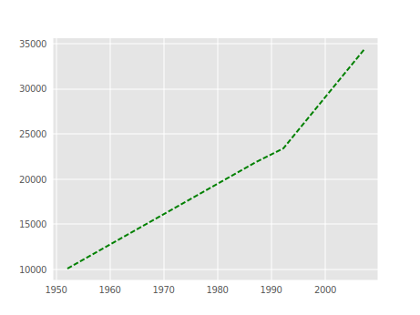

Content from Esecuzione e chiusura
Ultimo aggiornamento il 2025-11-06 | Modifica questa pagina
Tempo stimato: 15 minuti
Panoramica
Domande
- Come posso eseguire i programmi Python?
Obiettivi
- Avviare JupyterLab.
- Creare un nuovo script Python.
- Creare un Jupyter notebook.
- Arrestare il server di JupyterLab.
- Comprendere la differenza tra uno script Python e un Jupyter notebook.
- Creare celle Markdown in un notebook.
- Creare ed eseguire celle Python in un notebook.
Per eseguire Python, per il resto di questo workshop useremo i Jupyter Notebooks tramite JupyterLab. I notebook Jupyter sono molto diffusi nella scienza dei dati e nella visualizzazione e rappresentano una comoda soluzione per eseguire codice Python in modo interattivo, in cui è possibile visualizzare e condividere facilmente i risultati del proprio codice. Esistono altri modi per modificare, gestire ed eseguire il codice. Gli sviluppatori di software spesso usano un ambiente di sviluppo integrato (IDE) come PyCharm o Visual Studio Code, oppure editor di testo come Vim o Emacs, per creare e modificare i loro programmi Python. Dopo aver modificato e salvato i programmi, è possibile eseguirli all’interno dell’IDE stesso o direttamente dalla riga di comando. I notebook Jupyter, invece, consentono di eseguire e visualizzare immediatamente i risultati del codice all’interno del notebook.
JupyterLab ha diverse funzioni utili:
- È possibile digitare, modificare, copiare e incollare facilmente blocchi di codice.
- L’autocompletamento consente di accedere rapidamente a nomi di oggetti/metodi e di scoprirne di più.
- Permette di annotare il codice con collegamenti, testo di dimensioni diverse, elenchi puntati ecc., per renderlo più accessibile a voi e ai vostri collaboratori.
- Consente di visualizzare le figure accanto al codice che le produce, per raccontare una storia completa dell’analisi.
Ogni notebook contiene una o più celle che possono contenere codice, testo o immagini.
Iniziare con JupyterLab
JupyterLab è un server di applicazioni con interfaccia web del Project Jupyterhe consente di lavorare con documenti e attività (notebook Jupyter, editor di testo, terminali e componenti personalizzati) in modo flessibile, integrato ed estensibile. JupyterLab richiede un browser ragionevolmente aggiornato (idealmente una versione corrente di Chrome, Safari o Firefox); Internet Explorer 9 e precedenti non sono supportati.
JupyterLab è incluso nella distribuzione Anaconda Python. Se non avete ancora installato Anaconda, consultate le istruzioni di installazione per le istruzioni di installazione.
questa lezione eseguiremo JupyterLab in locale sui nostri computer, quindi non sarà necessaria una connessione a Internet oltre a quella iniziale per scaricare e installare Anaconda e JupyterLab.
- Avviare il server JupyterLab sul proprio computer.
- Usare un browser per aprire uno speciale URL localhost che si connette al server JupyterLab.
- Il server JupyterLab esegue il lavoro e il browser web visualizza il risultato.
- Digitare il codice nel browser e vedere i risultati dopo che il server JupyterLab ha terminato l’esecuzione del codice.
JupyterLab? E i taccuini Jupyter?
JupyterLab è la prossima tappa dell’evoluzione del Jupyter Notebook. Se avete già lavorato con i notebook Jupyter, sapete cosa aspettarvi da JupyterLab.
GGli utenti esperti interessati a un confronto più dettagliato tra le interfacce di JupyterLab e dei notebook Jupyter possono consultare la documentazione dell’interfaccia utente di JupyterLab.
Avvio di JupyterLab
È possibile avviare il server JupyterLab dalla riga di comando o tramite un’applicazione chiamata Anaconda Navigator (inclusa nella distribuzione Anaconda Python).
macOS - Riga di comando
Per avviare il server JupyterLab è necessario accedere alla riga di comando tramite Terminale. Due modi per aprirlo su Mac:
- Nella cartella Applicazioni, aprire Utility e fare doppio clic su Terminale.
- Premere Comando + barra spaziatrice pper aprire Spotlight, digitare Terminal e premere Invio o fare doppio clic sul risultato.
Dopo aver avviato Terminale, eseguite:
Utenti Windows - Riga di comando
Per avviare il server JupyterLab è necessario accedere all’Anaconda Prompt.
Premere Tasto logo di Windows e cercare
Anaconda Prompt, e aprirlo. Poi eseguire:
Anaconda Navigator
Per avviare JupyterLab da Anaconda Navigator occorre prima avviare
Anaconda Navigator (cliccare per istruzioni dettagliate su macOS,
Windows e Linux). È possibile cercarlo con Spotlight su macOS
(Command + barra spaziatrice), con la ricerca di
Windows (tasto logo), oppure aprendo un terminale ed eseguendo
anaconda-navigator.
Dopo l’avvio di Anaconda Navigator, fare clic su Launch sotto JupyterLab (potrebbe essere necessario scorrere).
Ecco una schermata di una pagina di Anaconda Navigator simile a quella che dovrebbe aprirsi su macOS o Windows.

Ecco una schermata di una pagina di destinazione di JupyterLab che dovrebbe essere simile a quella che si apre nel browser web predefinito dopo aver avviato il server JupyterLab su macOS o Windows.

L’interfaccia di JupyterLab
JupyterLab ha molte caratteristiche tipiche degli IDE tradizionali, ma è focalizzato su blocchi flessibili per il calcolo interattivo ed esplorativo.
L’interfaccia di JupyterLab omprende la Barra dei menu, una barra laterale sinistra comprimibile e l’area di lavoro principale con le schede di documenti e attività.
Barra dei menu
La barra dei menu, in alto, espone azioni e scorciatoie. I menu predefiniti includono:
- File: operazioni su file e directory come Nuovo, Apri, Chiudi, Salva, ecc. Il menu File comprende anche l’azione Shut Down utilizzata per spegnere il server JupyterLab.
- Modifica: Azioni relative alla modifica di documenti e altre attività come Undo, Cut, Copy, Paste, ecc.
- Visualizza: Azioni che modificano l’aspetto di JupyterLab.
- Esegui: Azioni per l’esecuzione di codice in diverse attività come i notebooks e le console di codice (discusse più avanti).
- Kernel: Azioni per la gestione dei kernel. I kernel in Jupyter saranno spiegati in dettaglio più avanti.
- Tabs: Un elenco dei documenti e delle attività aperte nell’area di lavoro principale.
- Impostazioni: Le impostazioni comuni di JupyterLab possono essere configurate utilizzando questo menu. Nel menu a discesa è presente anche un’opzione Advanced Settings Editor che fornisce un controllo più preciso delle impostazioni e delle opzioni di configurazione di JupyterLab.
- Help: Un elenco di link di aiuto a JupyterLab e al kernel.
Kernel
La documentazione di JupyterLab definisce i kernel come «processi separati avviati dal server che eseguono il codice in diversi linguaggi ed ambienti». Aprire un notebook avvia un kernel (un processo) che eseguirà il codice. In questa lezione useremo il kernel IPython per eseguire interattivamente codice Python 3.
L’uso di altri kernel per altri linguaggi di programmazione di Jupyter ci permetterebbe di scrivere ed eseguire codice in altri linguaggi di programmazione nella stessa interfaccia di JupyterLab, come R, Java, Julia, Ruby, JavaScript, Fortran, ecc.
Di seguito è riportata una schermata della barra dei menu predefinita.

Barra laterale sinistra
La barra laterale sinistra contiene una serie di schede di uso comune, come il browser dei file (che mostra il contenuto della directory in cui è stato lanciato il server JupyterLab), l’elenco dei kernel e dei terminali in esecuzione, la tavolozza dei comandi e l’elenco delle schede aperte nell’area di lavoro principale. Di seguito è riportata un’immagine della barra laterale sinistra predefinita.

La barra laterale sinistra può essere chiusa o espansa selezionando “Mostra barra laterale sinistra” nel menu Visualizza o facendo clic sulla scheda della barra laterale attiva.
Area di lavoro principale
L’area di lavoro principale di JupyterLab consente di organizzare i documenti (notebook, file di testo, ecc.) e le altre attività (terminali, console di codice, ecc.) in pannelli di schede che possono essere ridimensionati o suddivisi. Di seguito è riportata una schermata dell’area di lavoro principale predefinita.
Se non vedete la scheda Launcher, fate clic sul segno più blu sotto i menu “File” e “Modifica” e apparirà.

Trascinate una scheda al centro di un pannello di schede per spostare la scheda nel pannello. Suddividere un pannello di schede trascinando una scheda a sinistra, a destra, in alto o in basso del pannello. L’area di lavoro ha una sola attività corrente. La scheda dell’attività corrente è contrassegnata da un bordo superiore colorato (blu per impostazione predefinita).
Creazione di uno script Python
- Per iniziare a scrivere un nuovo programma Python, fate clic
sull’icona Text File sotto l’intestazione Other nel
Launcher dell’area di lavoro principale.
- È anche possibile creare un nuovo file di testo semplice selezionando New -> Text File dal menu File nella barra dei menu.
- Per convertire questo file di testo in un programma Python,
selezionate l’azione Save File As dal menu File nella
barra dei menu e date al nuovo file di testo un nome che termini con
l’estensione
.py.- L’estensione
.pyfa capire a tutti (compreso il sistema operativo) che questo file di testo è un programma Python. - Questa è una convenzione, non un requisito.
- L’estensione
Creazione di un quaderno Jupyter
Per aprire un nuovo notebook fare clic sull’icona Python 3 sotto l’intestazione Notebook nel Launcher dell’area di lavoro principale. È anche possibile creare un nuovo blocco note selezionando New -> Notebook dal menu File nella barra dei menu.
Note aggiuntive sui Jupyter notebook.
- I file del notebook hanno l’estensione
.ipynbper distinguerli dai programmi Python in testo semplice. - I notebook possono essere esportati come script Python che possono essere eseguiti dalla riga di comando.
Di seguito è riportata una schermata di un Jupyter notebook in esecuzione all’interno di JupyterLab. Se siete interessati a maggiori dettagli, consultate la documentazione ufficiale del notebook.

Come è memorizzato
- Il file del notebook è memorizzato in un formato chiamato JSON.
- Proprio come una pagina web, ciò che viene salvato è diverso da ciò che si vede nel browser.
- Ma questo formato consente a Jupyter di combinare codice sorgente, testo e immagini in un unico file.
Disporre i documenti in pannelli di schede
Nell’area di lavoro principale di JupyterLab è possibile organizzare i documenti in pannelli di schede. Ecco un esempio tratto dalla documentazione ufficiale.

Per prima cosa, create un file di testo, una console Python e una finestra di terminale e disponeteli in tre pannelli. Poi create un notebook, una finestra di terminale e un file di testo e disponeteli in tre pannelli. Infine, create la vostra combinazione di pannelli e schede. Quale combinazione ritenete più utile per il vostro flusso di lavoro?
Dopo aver creato le schede necessarie, trascinate una scheda al centro di un pannello per spostarla; quindi suddividete un pannello trascinando una scheda a sinistra, a destra, in alto o in basso.
Codice vs. Testo
Jupyter mescola codice e testo in diversi tipi di blocchi, chiamati celle. Spesso usiamo il termine “codice” per indicare “il codice sorgente di un software scritto in un linguaggio come Python”. Una “cella di codice” in un blocco note è una cella che contiene software; una “cella di testo” è una cella che contiene normale testo scritta per gli esseri umani.
Il notebook ha le modalità Comando e Modifica.
- Premendo alternatamente Esc e Ritorno, iil bordo della cella cambia (grigio ↔︎ blu).
- Queste sono le modalità Comando (grigio) e Modifica (blu) del blocco note.
- La modalità comando (bordo grigio) consente di modificare le funzioni a livello di blocco note, mentre la modalità Modifica modifica il contenuto delle celle (bordo blu).
- In modalità Comando (esc/grigio),
- Il tasto b crea una nuova cella sotto la cella attualmente selezionata.
- il tasto a ne crea uno sopra.
- Il tasto x cancella la cella corrente.
- Il tasto z annulla l’ultima operazione della cella (che può essere una cancellazione, una creazione, ecc.).
- Tutte le azioni possono essere eseguite utilizzando i menu, ma ci sono molte scorciatoie da tastiera per velocizzare le operazioni.
Comando Vs. Modifica
Nella pagina del notebook siete in modalità Comando o Modifica? Passate da una modalità all’altra. Usate le scorciatoie per creare una nuova cella, eliminarla e annullare l’ultima operazione.
La modalità Comando ha un bordo grigio e la modalità Modifica ha un bordo blu. Usate Esc e Retro per passare da una modalità all’altra. Dovete essere in modalità Comando (premete Esc se la cella è blu). Digitare b o a. È necessario essere in modalità Comando (premere Esc se la cella è blu). Digitare x. È necessario essere in modalità Comando (premere Esc se la cella è blu). Digitare z.
Utilizzare la tastiera e il mouse per selezionare e modificare le celle.
- Premendo il tasto Invio il bordo diventa blu e si attiva la modalità Modifica, che consente di digitare all’interno della cella.
- Poiché vogliamo essere in grado di scrivere molte righe di codice in una singola cella, premendo il tasto Invio in modalità Modifica (blu) si sposta il cursore sulla riga successiva della cella, proprio come in un editor di testo.
- Abbiamo bisogno di un altro modo per dire al blocco note che vogliamo eseguire ciò che è contenuto nella cella.
- Premendo insieme Shift+Ritorno si eseguirà il contenuto della cella.
- Notate che i tasti Return e Shift sulla destra della tastiera sono uno accanto all’altro.
Il blocco note trasformerà Markdown in una documentazione ben stampata.
- I notebook possono renderizzare file Markdown.
- Un semplice formato di testo per scrivere elenchi, collegamenti e altri elementi che potrebbero essere inseriti in una pagina Web.
- Equivalentemente, un sottoinsieme di HTML che assomiglia a quello che si invia in una e-mail vecchio stile.
- Trasformate la cella corrente in una cella Markdown accedendo alla modalità Comando (Esc/grigio) e premendo il tasto M.
-
In [ ]:scomparirà per indicare che non è più una cella di codice e si potrà scrivere in Markdown. - Trasformate la cella corrente in una cella Codice accedendo alla modalità Comando (Esc/grigio) e premendo il tasto y.
Markdown fa la maggior parte di ciò che fa l’HTML.
Tabella di esempio: sintassi Markdown e output renderizzato.
| Markdown code | Rendered output |
|---|---|
|
|
|
|
|
|
|
A Level-1 Heading |
|
A Level-2 Heading (etc.) |
|
Line breaks don’t matter. But blank lines create new paragraphs. |
|
Links are created with
|
Creare elenchi in Markdown
Create un elenco annidato in una cella Markdown che assomigli a:
- Ottenere finanziamenti.
- Fare il lavoro.
- Esperimento di progettazione.
- Raccogliere i dati.
- Analizzare.
- Scrivere.
- Pubblica.
Questa sfida integra sia l’elenco numerato che l’elenco puntato. Si noti che l’elenco puntato è rientrato di 2 spazi in modo da essere in linea con gli elementi dell’elenco numerato.
1. Ottenere finanziamenti.
2. Fare il lavoro.
* Esperimento di progettazione.
* Raccogliere i dati.
* Analizzare.
3. Scrivere.
4. Pubblica.Cambia una cella esistente da Codice a Markdown
Cosa succede se si scrive Python in una cella di codice e poi si passa a una cella di Markdown? Ad esempio, inserite quanto segue in una cella di codice:
e poi eseguirlo con Shift+Return per essere sicuri che funzioni come cella di codice. Ora tornate alla cella e usate Esc e poi m per passare la cella a Markdown ed “eseguirla” con Shift+Return. Cosa è successo e come potrebbe essere utile?
Equazioni
Il Markdown standard (come quello che stiamo usando per queste note) nnon renderizza le equazioni, ma il notebook sì. Creare una nuova cella Markdown e inserire quanto segue:
$\sum_{i=1}^{N} 2^{-i} \approx 1$(probabilmente è più facile copiare e incollare). Cosa mostra? Cosa
pensate che facciano il trattino basso, _, il circonflesso,
^, e il segno del dollaro, $?
Il notebook mostra l’equazione come verrebbe renderizzata con
sintassi LaTeX. Il segno del dollaro, $, è usato per
indicare a Markdown che il testo intermedio è un’equazione LaTeX. Se non
si ha familiarità con LaTeX, il trattino basso, _, è usato
per i pedici e il circonflesso, ^, per gli apici. Una
coppia di parentesi graffe, { e }, viene usata
per raggruppare il testo in modo che l’istruzione i=1
diventi il pedice e N l’apice. Allo stesso modo,
-i è tra parentesi graffe per rendere l’intera istruzione
l’apice di 2. \sum e \approx sono
comandi LaTeX per i simboli “somma su” e “approssima”.
Chiusura di JupyterLab
- Dalla barra dei menu selezionare il menu “File” e poi scegliere “Shut Down” in fondo al menu a discesa. Verrà richiesto di confermare l’arresto del server JupyterLab(non dimenticate di salvare il vostro lavoro!). Fare clic su “Shut Down” per chiudere il server JupyterLab.
- Per riavviare il server JupyterLab è necessario eseguire nuovamente il seguente comando da una shell.
$ jupyter labChiusura di JupyterLab
Esercitatevi a chiudere e riavviare il server JupyterLab.
- Gli script Python sono file di testo semplice.
- Usare il Jupyter Notebook per modificare ed eseguire Python.
- Il notebook ha le modalità Comando e Modifica.
- Usare tastiera e mouse per selezionare e modificare le celle.
- Il notebook renderizza Markdown in documentazione.
- Markdown copre gran parte delle funzionalità di HTML.
Content from Variabili e assegnazioni
Ultimo aggiornamento il 2025-11-06 | Modifica questa pagina
Tempo stimato: 20 minuti
Panoramica
Domande
- Come si possono memorizzare i dati nei programmi?
Obiettivi
- Scrivere programmi che assegnano valori scalari alle variabili ed eseguono calcoli con tali valori.
- Tracciare correttamente i cambiamenti di valore nei programmi che utilizzano l’assegnazione scalare.
Usare le variabili per memorizzare i valori.
Variabili sono nomi di valori.
-
Nomi di variabili
- Possono solo contenere lettere, cifre e il trattino
basso
_(tipicamente usato per separare le parole in nomi di variabili lunghi) - Non possono iniziare con una cifra
- Sono sensibili alle maiuscole (age, Age e AGE sono tre variabili diverse)
- Possono solo contenere lettere, cifre e il trattino
basso
Anche il nome deve essere significativo, in modo che l’utente o un altro programmatore sappia di cosa si tratta
I nomi delle variabili che iniziano con trattini bassi, come
__alistairs_real_age, hanno un significato speciale, quindi non lo faremo finché non avremo capito la convenzione.In Python il simbolo
=assegna il valore a destra al nome a sinistra.La variabile viene creata quando le viene assegnato un valore.
-
Qui Python assegna un’età alla variabile
agee un nome tra virgolette alla variabilefirst_name.
Usare print per visualizzare i valori.
- Python ha una funzione integrata chiamata
printche stampa le cose come testo. - Chiamate la funzione (cioè dite a Python di eseguirla) usando il suo nome.
- Fornire i valori alla funzione (cioè le cose da stampare) tra parentesi.
- Per aggiungere una stringa alla stampa, avvolgerla in apici singoli o doppi.
- I valori passati alla funzione sono chiamati argomenti
OUTPUT
Ahmed is 42 years old-
printinserisce automaticamente un singolo spazio tra gli elementi per separarli. - e si avvolge su una nuova riga alla fine.
Le variabili devono essere create prima di essere utilizzate.
- Se una variabile non esiste ancora o se il nome è stato scritto male, Python segnala un errore. (A differenza di alcuni linguaggi, che “indovinano” un valore predefinito)
ERRORE
---------------------------------------------------------------------------
NameError Traceback (most recent call last)
<ipython-input-1-c1fbb4e96102> in <module>()
----> 1 print(last_name)
NameError: name 'last_name' is not defined- L’ultima riga di un messaggio di errore è di solito la più informativa.
- I messaggi di errore saranno esaminati in dettaglio [più avanti] (17-scope.md#reading-error-messages).
Le variabili persistono tra una cella e l’altra
Siate consapevoli che in un quaderno Jupyter è importante l’ordine di esecuzione delle celle, non l’ordine in cui appaiono. Python ricorda tutto il codice eseguito in precedenza, comprese le variabili definite, indipendentemente dall’ordine nel notebook. Pertanto, se si definiscono variabili più in basso nel notebook e poi si (ri)eseguono celle più in alto, quelle definite più in basso saranno ancora presenti. Ad esempio, si creino due celle con il seguente contenuto, in quest’ordine:
Se lo si esegue in ordine, la prima cella darà un errore. Tuttavia,
se si esegue la prima cella dopo la seconda cella, verrà
stampato 1. Per evitare confusione, può essere utile usare
l’opzione Kernel -> Restart & Run All
che cancella l’interprete ed esegue tutto da zero, dall’inizio alla
fine.
Le variabili possono essere usate nei calcoli.
- Possiamo usare le variabili nei calcoli come se fossero valori.
- Ricordate che abbiamo assegnato il valore
42aagequalche riga fa.
- Ricordate che abbiamo assegnato il valore
OUTPUT
Age in three years: 45Usare un indice per ottenere un singolo carattere da una stringa.
- I caratteri (singole lettere, numeri e così via) in una stringa sono
ordinati. Ad esempio, la stringa
'AB'non è uguale a'BA'. A causa di questo ordinamento, possiamo trattare la stringa come un elenco di caratteri. - A ogni posizione nella stringa (prima, seconda, ecc.) viene assegnato un numero. Questo numero è chiamato indice o talvolta pedice.
- Gli indici sono numerati a partire da 0.
- utilizzare l’indice della posizione tra parentesi quadre per ottenere il carattere in quella posizione.

OUTPUT
hUsare una slice per ottenere una sottostringa.
- Una parte di una stringa è chiamata sottostringa. Una sottostringa può essere breve come un singolo carattere.
- Un elemento di un elenco è chiamato elemento. Ogni volta che trattiamo una stringa come se fosse un elenco, gli elementi della stringa sono i suoi singoli caratteri.
- Una slice è una parte di una stringa (o, più in generale, una parte di qualsiasi cosa simile a un elenco).
- Prendiamo una slice con la notazione
[start:stop], dovestartè l’indice intero del primo elemento che vogliamo estopè l’indice intero dell’elemento appena successivo all’ultimo elemento che vogliamo. - La differenza tra
stopestartè la lunghezza della slice. - L’esecuzione di una slice non modifica il contenuto della stringa originale. Al contrario, l’acquisizione di una fetta restituisce una copia di una parte della stringa originale.
OUTPUT
sodUsare la funzione integrata len per trovare la
lunghezza di una stringa.
OUTPUT
6- Le funzioni annidate vengono valutate dall’interno verso l’esterno, come in matematica.
Python è sensibile alle maiuscole e alle minuscole.
- Python pensa che le lettere maiuscole e minuscole siano diverse,
quindi
Nameenamesono variabili diverse. - Esistono convenzioni per l’uso di lettere maiuscole all’inizio dei nomi delle variabili, quindi per ora useremo lettere minuscole.
Utilizzare nomi di variabili significativi.
- A Python non interessa come si chiamano le variabili, purché rispettino le regole (caratteri alfanumerici e trattino basso).
- Utilizzare nomi di variabili significativi per aiutare gli altri a capire cosa fa il programma.
- L’“altra persona” più importante è il vostro io futuro.
OUTPUT
# Command # Value of x # Value of y # Value of swap #
x = 1.0 # 1.0 # not defined # not defined #
y = 3.0 # 1.0 # 3.0 # not defined #
swap = x # 1.0 # 3.0 # 1.0 #
x = y # 3.0 # 3.0 # 1.0 #
y = swap # 3.0 # 1.0 # 1.0 #Queste tre righe scambiano i valori in x e
y usando la variabile swap come memoria
temporanea. Si tratta di un idioma di programmazione piuttosto
comune.
OUTPUT
leftAlla variabile initial viene assegnato il valore
'left'. Nella seconda riga, anche la variabile
position riceve il valore di stringa 'left'.
Nella terza riga, alla variabile initial viene assegnato il
valore 'right', ma la variabile position
mantiene il suo valore di stringa 'left'.
Sfida
Se si assegna a = 123, cosa succede se si cerca di
ottenere la seconda cifra di a tramite
a[1]?
I numeri non sono stringhe o sequenze e Python solleva un errore se
si cerca di eseguire un’operazione di indice su un numero. Nella
[prossima lezione sui tipi e sulla conversione dei tipi]
(03-types-conversion.md) impareremo di più sui tipi e su come
convertirli Se si desidera l’ennesima cifra di un numero, è possibile
convertirla in una stringa utilizzando la funzione incorporata
str e quindi eseguire un’operazione di indice su tale
stringa.
ERRORE
TypeError: 'int' object is not subscriptableOUTPUT
2Scelta di un nome
Qual è il nome migliore per una variabile, m,
min o minutes? Suggerimento: pensate a quale
codice preferireste ereditare da qualcuno che sta per lasciare il
laboratorio:
ts = m * 60 + stot_sec = min * 60 + sectotal_seconds = minutes * 60 + seconds
minutes è la scelta migliore perché min
potrebbe significare qualcosa come “minimo” (e in realtà è una funzione
integrata in Python che tratteremo più avanti).
OUTPUT
atom_name[1:3] is: arConcetti di affettatura
Data la seguente stringa:
Cosa restituiscono queste espressioni?
species_name[2:8]-
species_name[11:](senza un valore dopo i due punti) -
species_name[:4](senza un valore prima dei due punti) -
species_name[:](solo i due punti) species_name[11:-3]species_name[-5:-3]- Cosa succede quando si sceglie un valore
stopche non rientra nell’intervallo? (cioè, provate conspecies_name[0:20]ospecies_name[:103])
-
species_name[2:8]restituisce la sottostringa'acia b' -
species_name[11:]restituisce la sottostringa'folia', dalla posizione 11 fino alla fine -
species_name[:4]restituisce la sottostringa'Acac', dall’inizio fino alla posizione 4 esclusa -
species_name[:]restituisce l’intera stringa'Acacia buxifolia' -
species_name[11:-3]restituisce la sottostringa'fo', dall’undicesima posizione alla terzultima -
species_name[-5:-3]restituisce anche la sottostringa'fo', dalla quintultima posizione alla terzultima - Se una parte della slice è fuori dall’intervallo, l’operazione non
fallisce.
species_name[0:20]dà lo stesso risultato dispecies_name[0:]especies_name[:103]dà lo stesso risultato dispecies_name[:]
- Utilizzare le variabili per memorizzare i valori.
- Usare
printper visualizzare i valori. - Le variabili persistono tra le celle.
- Le variabili devono essere create prima di essere utilizzate.
- Le variabili possono essere utilizzate nei calcoli.
- Usare un indice per ottenere un singolo carattere da una stringa.
- Usare una slice per ottenere una sottostringa.
- Usare la funzione integrata
lenper trovare la lunghezza di una stringa. - Python è sensibile alle maiuscole e alle minuscole.
- Utilizzare nomi di variabili significativi.
Content from Tipi di dati e conversione dei tipi
Ultimo aggiornamento il 2025-11-06 | Modifica questa pagina
Tempo stimato: 20 minuti
Panoramica
Domande
- Quali tipi di dati memorizzano i programmi?
- Come posso convertire un tipo in un altro?
Obiettivi
- Spiegare le principali differenze tra numeri interi e numeri con la virgola.
- Spiegare le principali differenze tra numeri e stringhe.
- Utilizzare le funzioni integrate per convertire numeri interi, numeri con la virgola mobile e stringhe.
Ogni valore ha un tipo.
- Ogni valore in un programma ha un tipo specifico.
- Numero intero (
int): rappresenta numeri interi positivi o negativi come 3 o -512. - Numero con la virgola (
float): rappresenta numeri reali come 3,14159 o -2,5. - Stringa di caratteri (solitamente chiamata “stringa”,
str): testo.- Scritto tra apici singoli o doppi (purché corrispondano).
- Le virgolette non vengono stampate quando la stringa viene visualizzata.
Usare la funzione integrata type per trovare il tipo di
un valore.
- Usare la funzione integrata
typeper scoprire il tipo di un valore. - Funziona anche con le variabili.
- Ma ricordate: il valore ha il tipo — la variabile è solo un’etichetta.
OUTPUT
<class 'int'>OUTPUT
<class 'str'>I tipi controllano quali operazioni (o metodi) possono essere eseguite su un dato valore.
- Il tipo di un valore determina quali operazioni il programma può eseguire su di esso
OUTPUT
2ERRORE
---------------------------------------------------------------------------
TypeError Traceback (most recent call last)
<ipython-input-2-67f5626a1e07> in <module>()
----> 1 print('hello' - 'h')
TypeError: unsupported operand type(s) for -: 'str' and 'str'Si possono usare gli operatori “+” e “*” sulle stringhe.
- “Aggiungendo” stringhe di caratteri le concatena.
OUTPUT
Ahmed Walsh- Moltiplicando una stringa di caratteri per un numero intero
N si crea una nuova stringa che consiste in quella stringa di
caratteri ripetuta N volte.
- Poiché la moltiplicazione è un’addizione ripetuta.
OUTPUT
==========Le stringhe hanno una lunghezza (ma i numeri no).
- La funzione integrata
lenconta il numero di caratteri di una stringa.
OUTPUT
11- Ma i numeri non hanno una lunghezza (nemmeno zero).
ERRORE
---------------------------------------------------------------------------
TypeError Traceback (most recent call last)
<ipython-input-3-f769e8e8097d> in <module>()
----> 1 print(len(52))
TypeError: object of type 'int' has no len()Deve convertire i numeri in stringhe o viceversa quando opera su di essi.
- Non si possono sommare numeri e stringhe.
ERRORE
---------------------------------------------------------------------------
TypeError Traceback (most recent call last)
<ipython-input-4-fe4f54a023c6> in <module>()
----> 1 print(1 + '2')
TypeError: unsupported operand type(s) for +: 'int' and 'str'- Non è consentito perché è ambiguo:
1 + '2'dovrebbe essere3o'12'? - Alcuni tipi possono essere convertiti in altri tipi utilizzando il nome del tipo come funzione.
OUTPUT
3
12Può mischiare liberamente interi e numeri con la virgola (float) nelle operazioni.
- Gli interi e i numeri con la virgola possono essere usati insieme in
aritmetica.
- Python 3 converte automaticamente gli interi in float quando necessario.
OUTPUT
half is 0.5
three squared is 9.0Le variabili cambiano valore solo quando viene loro assegnato qualcosa.
- Se una cella di un foglio di calcolo dipende da un’altra e si aggiorna quest’ultima, la prima si aggiorna automaticamente.
- Questo non avviene nei linguaggi di programmazione.
PYTHON
variable_one = 1
variable_two = 5 * variable_one
variable_one = 2
print('first is', variable_one, 'and second is', variable_two)OUTPUT
first is 2 and second is 5- Il computer legge il valore di
variable_onequando esegue la moltiplicazione, crea un nuovo valore e lo assegna avariable_two. - In seguito, il valore di
variable_twoè impostato sul nuovo valore e non dipende davariable_one, quindi il suo valore non cambia automaticamente quando cambiavariable_one.
Frazioni
Che tipo di valore è 3,4? Come si fa a scoprirlo?
Conversione automatica di tipo
Che tipo di numero è 3,25 + 4?
Scegliere un tipo
Quale tipo di valore (intero, numero con la virgola o stringa di caratteri) usereste per rappresentare ciascuno dei seguenti elementi? Cercate di dare più di una risposta valida per ogni problema. Per esempio, nel punto 1, quando avrebbe più senso contare i giorni con una variabile float piuttosto che con un numero intero?
- Numero di giorni dall’inizio dell’anno.
- Tempo trascorso dall’inizio dell’anno a oggi in giorni.
- Numero di serie di un pezzo di attrezzatura da laboratorio.
- Età di un campione di laboratorio
- Popolazione attuale di una città.
- Popolazione media di una città nel tempo.
Le risposte alle domande sono:
- Intero, poiché il numero di giorni è compreso tra 1 e 365.
- Virgola (float), poiché sono richiesti giorni frazionati
- Stringa se il numero di serie contiene lettere e numeri, altrimenti numero intero se il numero di serie è composto solo da numeri
- Questo varia! Come si definisce l’età di un campione? Giorni interi dalla raccolta (intero)? Data e ora (stringa)?
- Scegliere float per rappresentare la popolazione in grandi aggregati (ad esempio, milioni) o i numeri interi per rappresentare la popolazione in unità di individui.
- Numeri con la virgola, poiché è probabile che una media abbia una parte frazionaria.
Tipi di divisione
In Python 3, l’operatore // esegue la divisione intera
(numeri interi), l’operatore / esegue la divisione con la
virgola e l’operatore % (o modulo) calcola e
restituisce il resto della divisione intera:
OUTPUT
5 // 3: 1
5 / 3: 1.6666666666666667
5 % 3: 2Se num_subjects è il numero di soggetti che partecipano
a uno studio e num_per_survey è il numero di soggetti che
possono partecipare a un singolo sondaggio, scrivere un’espressione che
calcoli il numero di sondaggi necessari per raggiungere tutti una
volta.
Vogliamo il numero minimo di sondaggi che raggiunge tutti una volta,
che è il valore arrotondato per eccesso di
num_subjects/ num_per_survey. Ciò equivale a eseguire una
divisione per piani con // e aggiungere 1. Prima della
divisione è necessario sottrarre 1 dal numero di soggetti per gestire il
caso in cui num_subjects sia uniformemente divisibile per
num_per_survey.
PYTHON
num_subjects = 600
num_per_survey = 42
num_surveys = (num_subjects - 1) // num_per_survey + 1
print(num_subjects, 'subjects,', num_per_survey, 'per survey:', num_surveys)OUTPUT
600 subjects, 42 per survey: 15Stringhe a numeri
Se possibile, float() convertirà una stringa in un
numero float e int() convertirà float in un intero:
OUTPUT
string to float: 3.4
float to int: 3Se la conversione non ha senso, viene visualizzato un messaggio di errore.
ERRORE
---------------------------------------------------------------------------
ValueError Traceback (most recent call last)
<ipython-input-5-df3b790bf0a2> in <module>
----> 1 print("string to float:", float("Hello world!"))
ValueError: could not convert string to float: 'Hello world!'Date queste informazioni, cosa ci si aspetta che faccia il seguente programma?
Cosa fa in realtà?
Perché pensate che lo faccia?
Cosa ci si aspetta che faccia questo programma? Ci si potrebbe
aspettare che il comando int di Python 3 converta la
stringa “3.4” in 3.4 e un’ulteriore conversione di tipo in 3. Dopotutto,
Python 3 compie molte altre magie: non è forse parte del suo
fascino?
OUTPUT
---------------------------------------------------------------------------
ValueError Traceback (most recent call last)
<ipython-input-2-ec6729dfccdc> in <module>
----> 1 int("3.4")
ValueError: invalid literal for int() with base 10: '3.4'Tuttavia, Python 3 lancia un errore. Perché? Forse per coerenza. Se si chiede a Python di eseguire due typecast consecutivi, è necessario convertirli esplicitamente nel codice.
OUTPUT
3Aritmetica con tipi diversi
Risposta: 1 e 4
Numeri complessi
Python fornisce numeri complessi, che si scrivono come
1.0+2.0j. Se val è un numero complesso, si può
accedere alle sue parti reali e immaginarie usando la notazione a
punti come val.real e val.imag.
OUTPUT
6.0
2.0- Perché pensate che Python usi
jinvece diiper la parte immaginaria? - Cosa ci si aspetta che produca
1 + 2j + 3? - Cosa ci si aspetta che sia
4j? E4 jo4 + j?
- I trattamenti matematici standard di solito usano
iper indicare un numero immaginario. Tuttavia, stando a quanto riportato dai media, si trattava di una convenzione nata in precedenza nell’ambito dell’ingegneria elettrica, che ora rappresenta un’area tecnicamente costosa da modificare. [Stack Overflow fornisce ulteriori spiegazioni e discussioni] (https://stackoverflow.com/questions/24812444/why-are-complex-numbers-in-python-denoted-with-j-instead-of-i) (4+2j)-
4jeSyntax Error: invalid syntax. In questi ultimi casi,jè considerata una variabile e la dichiarazione dipende dal fatto chejsia definito e, in tal caso, dal valore che gli è stato assegnato.
- Ogni valore ha un tipo.
- Usare la funzione integrata
typeper trovare il tipo di un valore. - I tipi controllano le operazioni che possono essere eseguite sui valori.
- Le stringhe possono essere sommate e moltiplicate.
- Le stringhe hanno una lunghezza (ma i numeri no).
- Deve convertire i numeri in stringhe o viceversa quando opera su di essi.
- Può mescolare liberamente numeri interi e float nelle operazioni.
- Le variabili cambiano valore solo quando viene loro assegnato qualcosa.
Content from Funzioni integrate e aiuto
Ultimo aggiornamento il 2025-11-06 | Modifica questa pagina
Tempo stimato: 25 minuti
Panoramica
Domande
- Come posso usare le funzioni integrate?
- Come posso scoprire cosa fanno?
- Che tipo di errori possono verificarsi?
Obiettivi
- Spiegare lo scopo delle funzioni.
- Chiamare correttamente le funzioni integrate di Python.
- Annidare correttamente le chiamate alle funzioni integrate.
- Usare la guida per visualizzare la documentazione delle funzioni integrate.
- Descrivere correttamente le situazioni in cui si verificano SyntaxError e NameError.
Usare i commenti per aggiungere documentazione ai programmi.
Una funzione può accettare zero o più argomenti.
- Abbiamo già visto alcune funzioni, ora diamo un’occhiata più da vicino.
- Chiamiamo argomento il valore che si passa a una funzione quando la si utilizza
-
lenprende solo un argomento. -
int,strefloatcreano un nuovo valore a partire da uno esistente. -
printpuò essere chiamata senza argomenti o più -
printsenza argomenti stampa una riga vuota.- Bisogna sempre usare le parentesi, anche senza argomenti, in modo che Python sappia che si sta chiamando una funzione.
OUTPUT
before
afterOgni funzione restituisce qualcosa.
- Ogni funzione eseguita produce un risultato.
- Se la funzione non ha un risultato utile da restituire, di solito
restituisce il valore speciale
None.Noneè un oggetto Python che ritorna ogni volta che non c’è un valore.
OUTPUT
example
result of print is NoneLe funzioni incorporate di uso comune includono max,
min e round.
- Usare
maxper trovare il valore maggiore di uno o più valori. - Usare
minper trovare il minore. - Entrambi funzionano su stringhe di caratteri e numeri.
- “Max” e “Min” usano (0-9, A-Z, a-z) per confrontare le lettere.
OUTPUT
3
0Le funzioni possono essere seguite solo con alcuni o combinazioni di argomenti.
- A
maxemindeve essere dato almeno un argomento.- “La richiesta di un massino di un insieme vuoto” è una domanda senza senso.
- E devono essere dati oggetti che possono essere confrontati in modo significativo.
ERRORE
TypeError Traceback (most recent call last)
<ipython-input-52-3f049acf3762> in <module>
----> 1 print(max(1, 'a'))
TypeError: '>' not supported between instances of 'str' and 'int'Le funzioni possono avere valori predefiniti per alcuni argomenti.
-
roundarrotonda un numero float. - Per impostazione predefinita, arrotonda con zero cifre decimali.
OUTPUT
4- Possiamo specificare il numero di cifre decimali che desideriamo come argomento.
OUTPUT
3.7Le funzioni collegate agli oggetti sono chiamate metodi
- Le funzioni possono assumere un’altra forma, che sarà comune negli episodi dedicati a pandas.
- I metodi hanno le parentesi come le funzioni, ma vengono dopo la variabile.
- Alcuni metodi sono utilizzati per operazioni interne a Python e sono contrassegnati da doppie sottolineature.
PYTHON
my_string = 'Hello world!' # creazione di un oggetto stringa
print(len(my_string)) # la funzione len prende una stringa come argomento e restituisce la sua lunghezza
print(my_string.swapcase()) # chiamata al metodo swapcase sull'oggetto my_string
print(my_string.__len__()) # chiamata diretta al metodo interno __len__, usato da len(my_string)OUTPUT
12
hELLO WORLD!
12- Potreste anche vederli concatenati. Funzionano da sinistra a destra.
print(my_string.isupper()) # Non tutte le lettere sono maiuscole print(my_string.upper()) # Questo converte tutte le lettere in maiuscole
print(my_string.upper().isupper()) # Ora tutte le lettere sono maiuscole
```output
False
HELLO WORLD
TrueUsare la funzione integrata help per ottenere aiuto per
una funzione.
- Ogni funzione incorporata ha una documentazione online.
OUTPUT
Help on built-in function round in module builtins:
round(number, ndigits=None)
Round a number to a given precision in decimal digits.
The return value is an integer if ndigits is omitted or None. Otherwise
the return value has the same type as the number. ndigits may be negative.Il Jupyter notebook offre due modi per ottenere aiuto.
- Opzione 1: posizionare il cursore vicino al punto in cui viene
invocata la funzione in una cella (cioè il nome della funzione o i suoi
parametri),
- Tenere premuto Shift e premere Tab.
- Eseguire questa operazione più volte per espandere le informazioni restituite.
- Opzione 2: Digitare il nome della funzione in una cella con un punto interrogativo. Quindi eseguire la cella.
Python segnala un errore di sintassi quando non riesce a capire il sorgente di un programma.
- Non prova nemmeno a eseguire il programma se non può essere analizzato.
ERRORE
File "<ipython-input-56-f42768451d55>", line 2
name = 'Feng
^
SyntaxError: EOL while scanning string literalERRORE
File "<ipython-input-57-ccc3df3cf902>", line 2
age = = 52
^
SyntaxError: invalid syntax- Osservate più da vicino il messaggio di errore:
ERRORE
File "<ipython-input-6-d1cc229bf815>", line 1
print ("hello world"
^
SyntaxError: unexpected EOF while parsing- Il messaggio indica un problema sulla prima riga dell’input (“riga
1”).
- In questo caso la sezione “ipython-input” del nome del file ci dice che stiamo lavorando con l’input di IPython, l’interprete Python usato da Jupyter Notebook.
- La parte
-6-del nome del file indica che l’errore si è verificato nella cella 6 del nostro Notebook. - La prossima è la riga di codice problematica, che indica il problema
con un puntatore
^.
Python segnala un errore di runtime quando qualcosa va storto durante l’esecuzione di un programma.
ERRORE
NameError Traceback (most recent call last)
<ipython-input-59-1214fb6c55fc> in <module>
1 age = 53
----> 2 remaining = 100 - aege # mis-spelled 'age'
NameError: name 'aege' is not defined- Correggere gli errori di sintassi leggendo il codice sorgente e gli errori di runtime tracciando l’esecuzione del programma.
Che cosa succede quando
- Spiegate in termini semplici l’ordine delle operazioni nel seguente programma: quando avviene l’addizione, quando avviene la sottrazione, quando viene chiamata ogni funzione, ecc.
- Qual è il valore finale di
radiance?
- Ordine delle operazioni:
1.1 * radiance = 1.11.1 - 0.5 = 0.6min(radiance, 0.6) = 0.62.0 + 0.6 = 2.6max(2.1, 2.6) = 2.6- alla fine,
radiance = 2.6
Individuare la differenza
- Prevedere cosa stamperà ciascuna delle funzioni
printdel programma qui sotto. -
max(len(rich), poor)viene eseguito o produce un messaggio di errore? Se viene eseguito, il suo risultato ha senso?
OUTPUT
cOUTPUT
tinOUTPUT
4max(len(rich), poor) lancia un TypeError. Questo si
trasforma in max(4, 'tin') e, come abbiamo detto prima, una
stringa e un intero non possono essere confrontati in modo
significativo.
ERRORE
TypeError Traceback (most recent call last)
<ipython-input-65-bc82ad05177a> in <module>
----> 1 max(len(rich), poor)
TypeError: '>' not supported between instances of 'str' and 'int'Perché no?
Perché max e min non restituiscono
None quando sono chiamati senza argomenti?
max e min restituiscono TypeErrors in
questo caso perché non è stato fornito il numero corretto di parametri.
Se restituisse solo None, l’errore sarebbe molto più
difficile da rintracciare, perché probabilmente verrebbe memorizzato in
una variabile e utilizzato più avanti nel programma, per poi lanciare un
errore di runtime.
Ultimo carattere di una stringa
Se Python inizia a contare da zero e len restituisce il
numero di caratteri di una stringa, quale espressione indice otterrà
l’ultimo carattere della stringa name? (Nota: vedremo un
modo più semplice per farlo in un episodio successivo)
name[len(name) - 1]
Esplora la documentazione di Python!
La documentazione ufficiale di Python è probabilmente la fonte più completa di informazioni sul linguaggio. È disponibile in diverse lingue e contiene molte risorse utili. La pagina Built-in Functions contiene un catalogo di tutte queste funzioni, comprese quelle che abbiamo trattato in questa lezione. Alcune di queste sono più avanzate e non necessarie al momento, ma altre sono molto semplici e utili.
- Usare i commenti per aggiungere documentazione ai programmi.
- Una funzione può accettare zero o più argomenti.
- Le funzioni incorporate di uso comune includono
max,mineround. - Le funzioni possono funzionare solo per determinate combinazioni di argomenti.
- Le funzioni possono avere valori predefiniti per alcuni argomenti.
- Usare la funzione integrata
helpper ottenere aiuto per una funzione. - Il Jupyter notebook offre due modi per ottenere aiuto.
- Ogni funzione restituisce qualcosa.
- Python segnala un errore di sintassi quando non riesce a capire il sorgente di un programma.
- Python segnala un errore di runtime quando qualcosa va storto durante l’esecuzione di un programma.
- Correggere gli errori di sintassi leggendo il codice sorgente e gli errori di runtime tracciando l’esecuzione del programma.
Content from Caffè del mattino
Ultimo aggiornamento il 2025-03-02 | Modifica questa pagina
Tempo stimato: 0 minuti
Esercizio di riflessione
Durante il caffè, riflettete e discutete su quanto segue:
- Quali sono i diversi tipi di errori segnalati da Python?
- Il codice ha sempre prodotto i risultati attesi? Se no, perché?
- C’è qualcosa che possiamo fare per prevenire gli errori quando scriviamo il codice?
Content from Le biblioteche
Ultimo aggiornamento il 2025-11-06 | Modifica questa pagina
Tempo stimato: 20 minuti
Panoramica
Domande
- Come si può utilizzare il software scritto da altri?
- Come posso scoprire cosa fa questo software?
Obiettivi
- Spiegare cosa sono le librerie software e perché i programmatori le creano e le usano.
- Scrivere programmi che importano e utilizzano moduli della libreria standard di Python.
- Trovare e leggere la documentazione della libreria standard in modo interattivo (nell’interprete) e online.
La maggior parte della potenza di un linguaggio di programmazione è nelle sue librerie.
- Una libreria è una raccolta di file (chiamati
moduli) che contiene funzioni utilizzabili da altri programmi.
- Può contenere anche valori di dati (ad esempio, costanti numeriche) e altro.
- I contenuti della libreria dovrebbero essere correlati, ma non c’è modo di farlo rispettare.
- La libreria standard di Python è un’ampia suite di moduli fornita con Python stesso.
- Molte altre librerie sono disponibili su PyPI (l’indice dei pacchetti Python).
- Vedremo più avanti come scrivere nuove librerie.
Librerie e moduli
Una libreria è un insieme di moduli, ma i termini sono spesso usati in modo intercambiabile, soprattutto perché molte librerie sono costituite da un solo modulo, quindi non preoccupatevi se li mischiate.
Un programma deve importare un modulo di libreria prima di utilizzarlo.
- Usare
importper caricare un modulo di libreria nella memoria di un programma. - Quindi fare riferimento agli elementi del modulo come
module_name.thing_name.- Python usa
.per indicare “parte di”.
- Python usa
- Utilizzo di
math, uno dei moduli della libreria standard:
OUTPUT
pi is 3.141592653589793
cos(pi) is -1.0- Bisogna fare riferimento a ogni elemento con il nome del modulo.
-
math.cos(pi)non funziona: il riferimento apinon “eredita” in qualche modo il riferimento della funzione amath.
-
Usare help per conoscere il contenuto di un modulo di
libreria.
- funziona come l’aiuto per una funzione.
OUTPUT
Help on module math:
NAME
math
MODULE REFERENCE
http://docs.python.org/3/library/math
The following documentation is automatically generated from the Python
source files. It may be incomplete, incorrect or include features that
are considered implementation detail and may vary between Python
implementations. When in doubt, consult the module reference at the
location listed above.
DESCRIPTION
This module is always available. It provides access to the
mathematical functions defined by the C standard.
FUNCTIONS
acos(x, /)
Return the arc cosine (measured in radians) of x.
⋮ ⋮ ⋮Importare elementi specifici da un modulo di libreria per abbreviare i programmi.
- Usare
from ... import ...per caricare solo elementi specifici da un modulo di libreria. - quindi fare riferimento ad essi direttamente senza il nome della libreria come prefisso.
OUTPUT
cos(pi) is -1.0Creare un alias per un modulo di libreria quando lo si importa per accorciare i programmi.
- Usare
import ... as ...per dare a una libreria un breve alias durante l’importazione. - Quindi fare riferimento agli elementi della libreria usando questo nome abbreviato.
OUTPUT
cos(pi) is -1.0- comunemente usato per le librerie usate di frequente o con nomi
lunghi.
- Ad esempio, la libreria per grafici
matplotlibè spesso indicata con l’aliasmpl.
- Ad esempio, la libreria per grafici
- Ma può rendere i programmi più difficili da capire, poiché i lettori devono imparare gli alias del programma.
Esplorazione del modulo math
- Quale funzione del modulo
mathsi può usare per calcolare una radice quadrata senza usaresqrt? - Poiché la libreria contiene questa funzione, perché esiste
sqrt?
Usando
help(math)vediamo che abbiamopow(x,y)in aggiunta asqrt(x), quindi potremmo usarepow(x, 0.5)per trovare una radice quadrata.La funzione
sqrt(x)è probabilmente più leggibile dipow(x, 0.5)nell’implementazione delle equazioni. La leggibilità è una pietra miliare della buona programmazione, quindi ha senso fornire una funzione speciale per questo specifico caso comune.
Inoltre, il design della libreria math di Python ha
origine nello standard C, che include sia sqrt(x) che
pow(x,y), quindi un po’ di storia della programmazione si
ritrova nei nomi delle funzioni di Python.
Individuazione del modulo giusto
Si vuole selezionare un carattere casuale da una stringa:
- Quale modulo della libreria standard potrebbe aiutarvi?
- Quale funzione scegliereste da quel modulo? Ci sono alternative?
- Provate a scrivere un programma che utilizzi la funzione.
Il modulo random sembra essere utile.
La stringa ha 11 caratteri, ognuno dei quali ha un indice posizionale
da 0 a 10. Si possono usare le funzioni random.randrange
o random.randint
per ottenere un numero intero casuale compreso tra 0 e 10, e poi
selezionare il carattere bases a quell’indice:
o in modo più compatto:
Forse avete trovato la funzione random.sample?
Consente di risparmiare di digitare troppo, ma potrebbe essere un po’
più difficile da capire leggendo:
Si noti che questa funzione restituisce un elenco di valori. Impareremo a conoscere gli elenchi in [episodio 11] (11-lists.md).
La soluzione più semplice e breve è la funzione random.choice
che fa esattamente quello che vogliamo:
Jigsaw Puzzle (problema di Parson)
Riorganizzare le seguenti istruzioni in modo da stampare una base di DNA casuale e il suo indice nella stringa. Non tutte le istruzioni sono necessarie. Sentitevi liberi di usare/aggiungere variabili intermedie.
Quando è disponibile l’aiuto?
Quando un vostro collega digita help(math), Python
segnala un errore:
ERRORE
NameError: name 'math' is not definedCosa ha dimenticato di fare?
Importazione del modulo matematico (import math)
può essere scritto come
Dal momento che avete appena scritto il codice e avete familiarità con esso, potreste trovare la prima versione più facile da leggere. Ma quando si cerca di leggere un molte righe di codice, scritte da qualcun altro, o quando si rivede dopo diversi mesi, i nomi non abbreviati sono spesso più facili, a meno che non ci siano chiare convenzioni di abbreviazione.
Ci sono molti modi per importare le librerie!
Abbinare le seguenti istruzioni di stampa alle chiamate di libreria appropriate.
Comandi di stampa:
print("sin(pi/2) =", sin(pi/2))print("sin(pi/2) =", m.sin(m.pi/2))print("sin(pi/2) =", math.sin(math.pi/2))
Chiamate di libreria:
from math import sin, piimport mathimport math as mfrom math import *
- Chiamate di libreria 1 e 4. Per fare riferimento direttamente a
sinepisenza il nome della libreria come prefisso, è necessario usare l’istruzionefrom ... import .... Mentre la chiamata di libreria 1 importa specificamente le due funzionisinepi, la chiamata di libreria 4 importa tutte le funzioni del modulomath. - Chiamata alla libreria 3. In questo caso,
sinepisono indicati con il nome abbreviato di libreriaminvece dimath. La chiamata di libreria 3 fa esattamente questo usando la sintassiimport ... as ...: crea un alias permathsotto forma di nome abbreviatom. - Chiamata di libreria 2. Qui
sinepisono indicati con il normale nome di libreriamath, quindi è sufficiente la normale chiamataimport ....
Nota: sebbene la chiamata di libreria 4 funzioni,
importare tutti i nomi da un modulo usando un’importazione con caratteri
jolly è sconsigliato, in quanto
rende poco chiaro quali nomi del modulo sono usati nel codice. In
generale, è meglio rendere le importazioni il più specifiche possibile e
importare solo ciò che il codice utilizza. Nella chiamata di libreria 1,
la dichiarazione import ci dice esplicitamente che la
funzione sin è importata dal modulo math, ma
la chiamata di libreria 4 non fornisce questa informazione.
Importazione di elementi specifici
Molto probabilmente questa versione è più facile da leggere, perché è
meno densa. La ragione principale per non usare questa forma di
importazione è quella di evitare scontri di nomi. Per esempio, non si
importerebbe degrees in questo modo se si volesse usare
anche il nome degrees per una propria variabile o funzione.
O se si importasse anche una funzione chiamata degrees da
un’altra libreria.
OUTPUT
---------------------------------------------------------------------------
ValueError Traceback (most recent call last)
<ipython-input-1-d72e1d780bab> in <module>
1 from math import log
----> 2 log(0)
ValueError: math domain error- Il logaritmo di
xè definito solo perx > 0, quindi 0 è fuori dal dominio della funzione. - Si ottiene un errore del tipo
ValueError, che indica che la funzione ha ricevuto un valore di argomento inappropriato. Il messaggio aggiuntivo “errore del dominio matematico” chiarisce il problema.
- La maggior parte della potenza di un linguaggio di programmazione è nelle sue librerie.
- Un programma deve importare un modulo di una libreria per poterlo utilizzare.
- Usare
helpper conoscere il contenuto di un modulo di libreria. - Importazione di elementi specifici da una libreria per abbreviare i programmi.
- Creare un alias per una libreria quando la si importa per abbreviare i programmi.
Content from Lettura di dati tabellari in DataFrames
Ultimo aggiornamento il 2025-11-06 | Modifica questa pagina
Tempo stimato: 20 minuti
Panoramica
Domande
- Come si leggono i dati di una tabella?
Obiettivi
- Importare la libreria Pandas.
- Utilizzare Pandas per caricare un semplice set di dati CSV.
- Ottenere alcune informazioni di base su un Pandas DataFrame.
Utilizzare la libreria Pandas per eseguire statistiche su dati di una tabella.
- Pandas è una libreria Python molto utilizzata per le statistiche, in particolare per leggere e manipolare tabelle.
- Prende in prestito molte caratteristiche dai dataframe di R.
- Una tabella bidimensionale le cui colonne hanno nomi e potenzialmente tipi di dati diversi.
- Caricare Pandas con
import pandas as pd. L’aliaspdè comunemente usato per riferirsi alla libreria Pandas nel codice. - Leggere un file di dati CSV (Comma Separated Values) con
pd.read_csv.- L’argomento è il nome del file da leggere.
- Restituisce un dataframe che può essere assegnato a una variabile
PYTHON
import pandas as pd
data_oceania = pd.read_csv('data/gapminder_gdp_oceania.csv')
print(data_oceania)OUTPUT
country gdpPercap_1952 gdpPercap_1957 gdpPercap_1962 \
0 Australia 10039.59564 10949.64959 12217.22686
1 New Zealand 10556.57566 12247.39532 13175.67800
gdpPercap_1967 gdpPercap_1972 gdpPercap_1977 gdpPercap_1982 \
0 14526.12465 16788.62948 18334.19751 19477.00928
1 14463.91893 16046.03728 16233.71770 17632.41040
gdpPercap_1987 gdpPercap_1992 gdpPercap_1997 gdpPercap_2002 \
0 21888.88903 23424.76683 26997.93657 30687.75473
1 19007.19129 18363.32494 21050.41377 23189.80135
gdpPercap_2007
0 34435.36744
1 25185.00911- Le colonne di un dataframe sono le variabili osservate e le righe sono le osservazioni.
- Pandas usa la backslash
\per mostrare le righe avvolte quando l’output è troppo ampio per adattarsi allo schermo. - L’uso di nomi descrittivi per i dataframe ci aiuta a distinguere tra più dataframe, in modo da evitare di sovrascrivere accidentalmente un dataframe o di leggere da quello sbagliato.
File non trovato
Le nostre lezioni memorizzano i loro file di dati in una
sottodirectory data, motivo per cui il percorso del file è
data/gapminder_gdp_oceania.csv. Se si dimentica di
includere data/, o se lo si include ma la propria copia del
file si trova da qualche altra parte, si otterrà un runtime error che termina con una riga come
questa:
ERRORE
FileNotFoundError: [Errno 2] No such file or directory: 'data/gapminder_gdp_oceania.csv'Usare index_col per specificare che i valori di una
colonna devono essere usati come intestazioni di riga.
- Le intestazioni delle righe sono numeri (0 e 1 in questo caso).
- Si vuole davvero indicizzare per paese.
- Per eseguire questa operazione, passare il nome della colonna a
read_csvcome parametroindex_col. - Il nome del dataframe
data_oceania_countryci dice quale regione include i dati (oceania) e come sono indicizzati (country).
PYTHON
data_oceania_country = pd.read_csv('data/gapminder_gdp_oceania.csv', index_col='country')
print(data_oceania_country)OUTPUT
gdpPercap_1952 gdpPercap_1957 gdpPercap_1962 gdpPercap_1967 \
country
Australia 10039.59564 10949.64959 12217.22686 14526.12465
New Zealand 10556.57566 12247.39532 13175.67800 14463.91893
gdpPercap_1972 gdpPercap_1977 gdpPercap_1982 gdpPercap_1987 \
country
Australia 16788.62948 18334.19751 19477.00928 21888.88903
New Zealand 16046.03728 16233.71770 17632.41040 19007.19129
gdpPercap_1992 gdpPercap_1997 gdpPercap_2002 gdpPercap_2007
country
Australia 23424.76683 26997.93657 30687.75473 34435.36744
New Zealand 18363.32494 21050.41377 23189.80135 25185.00911Usare il metodo DataFrame.info() per saperne di più su
un dataframe.
OUTPUT
<class 'pandas.core.frame.DataFrame'>
Index: 2 entries, Australia to New Zealand
Data columns (total 12 columns):
gdpPercap_1952 2 non-null float64
gdpPercap_1957 2 non-null float64
gdpPercap_1962 2 non-null float64
gdpPercap_1967 2 non-null float64
gdpPercap_1972 2 non-null float64
gdpPercap_1977 2 non-null float64
gdpPercap_1982 2 non-null float64
gdpPercap_1987 2 non-null float64
gdpPercap_1992 2 non-null float64
gdpPercap_1997 2 non-null float64
gdpPercap_2002 2 non-null float64
gdpPercap_2007 2 non-null float64
dtypes: float64(12)
memory usage: 208.0+ bytes- Questo è un
DataFrame - Due righe denominate
'Australia'e'New Zealand' - Dodici colonne, ciascuna delle quali contiene due valori effettivi
in virgola mobile a 64 bit.
- Parleremo in seguito dei valori nulli, utilizzati per rappresentare le osservazioni mancanti.
- Utilizza 208 byte di memoria.
La variabile DataFrame.columns memorizza informazioni
sulle colonne del dataframe.
- Nota che questo è un dato,non un metodo. (non ha parentesi)
- Come
math.pi. - Quindi non usare
()per cercare di chiamarlo.
- Come
- Si chiama variabile membro, o semplicemente membro.
OUTPUT
Index(['gdpPercap_1952', 'gdpPercap_1957', 'gdpPercap_1962', 'gdpPercap_1967',
'gdpPercap_1972', 'gdpPercap_1977', 'gdpPercap_1982', 'gdpPercap_1987',
'gdpPercap_1992', 'gdpPercap_1997', 'gdpPercap_2002', 'gdpPercap_2007'],
dtype='object')Usare DataFrame.T per trasporre un dataframe.
- A volte si desidera trattare le colonne come righe e viceversa.
- La trasposizione (scritta
.T) non copia i dati, ma cambia solo la visione della tabella - Come
columns, è una variabile membro.
OUTPUT
country Australia New Zealand
gdpPercap_1952 10039.59564 10556.57566
gdpPercap_1957 10949.64959 12247.39532
gdpPercap_1962 12217.22686 13175.67800
gdpPercap_1967 14526.12465 14463.91893
gdpPercap_1972 16788.62948 16046.03728
gdpPercap_1977 18334.19751 16233.71770
gdpPercap_1982 19477.00928 17632.41040
gdpPercap_1987 21888.88903 19007.19129
gdpPercap_1992 23424.76683 18363.32494
gdpPercap_1997 26997.93657 21050.41377
gdpPercap_2002 30687.75473 23189.80135
gdpPercap_2007 34435.36744 25185.00911Usare DataFrame.describe() per ottenere statistiche di
sintesi sui dati.
DataFrame.describe() ottiene le statistiche riassuntive
solo delle colonne che hanno dati numerici. Tutte le altre colonne
vengono ignorate, a meno che non si utilizzi l’argomento
include='all'.
OUTPUT
gdpPercap_1952 gdpPercap_1957 gdpPercap_1962 gdpPercap_1967 \
count 2.000000 2.000000 2.000000 2.000000
mean 10298.085650 11598.522455 12696.452430 14495.021790
std 365.560078 917.644806 677.727301 43.986086
min 10039.595640 10949.649590 12217.226860 14463.918930
25% 10168.840645 11274.086022 12456.839645 14479.470360
50% 10298.085650 11598.522455 12696.452430 14495.021790
75% 10427.330655 11922.958888 12936.065215 14510.573220
max 10556.575660 12247.395320 13175.678000 14526.124650
gdpPercap_1972 gdpPercap_1977 gdpPercap_1982 gdpPercap_1987 \
count 2.00000 2.000000 2.000000 2.000000
mean 16417.33338 17283.957605 18554.709840 20448.040160
std 525.09198 1485.263517 1304.328377 2037.668013
min 16046.03728 16233.717700 17632.410400 19007.191290
25% 16231.68533 16758.837652 18093.560120 19727.615725
50% 16417.33338 17283.957605 18554.709840 20448.040160
75% 16602.98143 17809.077557 19015.859560 21168.464595
max 16788.62948 18334.197510 19477.009280 21888.889030
gdpPercap_1992 gdpPercap_1997 gdpPercap_2002 gdpPercap_2007
count 2.000000 2.000000 2.000000 2.000000
mean 20894.045885 24024.175170 26938.778040 29810.188275
std 3578.979883 4205.533703 5301.853680 6540.991104
min 18363.324940 21050.413770 23189.801350 25185.009110
25% 19628.685413 22537.294470 25064.289695 27497.598692
50% 20894.045885 24024.175170 26938.778040 29810.188275
75% 22159.406358 25511.055870 28813.266385 32122.777857
max 23424.766830 26997.936570 30687.754730 34435.367440- Non particolarmente utile con due soli record, ma molto utile quando ce ne sono migliaia.
Lettura di altri dati
Leggere i dati contenuti in gapminder_gdp_americas.csv
(che dovrebbe trovarsi nella stessa directory di
gapminder_gdp_oceania.csv) in una variabile chiamata
data_americas e visualizzarne le statistiche
riassuntive.
Per leggere un CSV, si usa pd.read_csv e gli si passa il
nome del file 'data/gapminder_gdp_americas.csv'. Passiamo
ancora una volta il nome della colonna 'country' al
parametro index_col per indicizzare per paese. Le
statistiche di riepilogo possono essere visualizzate con il metodo
DataFrame.describe().
Ispezione dei dati
Dopo aver letto i dati relativi alle Americhe, utilizzate
help(data_americas.head) e
help(data_americas.tail) per scoprire cosa fanno
DataFrame.head e DataFrame.tail.
- Quale metodo visualizzerà le prime tre righe di questi dati?
- Quale metodo visualizzerà le ultime tre colonne di questi dati? (Suggerimento: potrebbe essere necessario modificare la visualizzazione dei dati)
- Possiamo controllare le prime cinque righe di
data_americaseseguendodata_americas.head()che ci permette di visualizzare l’inizio del DataFrame. È possibile specificare il numero di righe che si desidera visualizzare specificando il parametronnella chiamata adata_americas.head(). Per visualizzare le prime tre righe, eseguire:
OUTPUT
continent gdpPercap_1952 gdpPercap_1957 gdpPercap_1962 \
country
Argentina Americas 5911.315053 6856.856212 7133.166023
Bolivia Americas 2677.326347 2127.686326 2180.972546
Brazil Americas 2108.944355 2487.365989 3336.585802
gdpPercap_1967 gdpPercap_1972 gdpPercap_1977 gdpPercap_1982 \
country
Argentina 8052.953021 9443.038526 10079.026740 8997.897412
Bolivia 2586.886053 2980.331339 3548.097832 3156.510452
Brazil 3429.864357 4985.711467 6660.118654 7030.835878
gdpPercap_1987 gdpPercap_1992 gdpPercap_1997 gdpPercap_2002 \
country
Argentina 9139.671389 9308.418710 10967.281950 8797.640716
Bolivia 2753.691490 2961.699694 3326.143191 3413.262690
Brazil 7807.095818 6950.283021 7957.980824 8131.212843
gdpPercap_2007
country
Argentina 12779.379640
Bolivia 3822.137084
Brazil 9065.800825- Per controllare le ultime tre righe di
data_americas, si usa il comandoamericas.tail(n=3), analogo ahead()usato sopra. Tuttavia, in questo caso vogliamo guardare le ultime tre colonne, quindi dobbiamo cambiare la nostra vista e usaretail(). Per farlo, creiamo un nuovo DataFrame in cui le righe e le colonne sono invertite:
Possiamo quindi visualizzare le ultime tre colonne di
americas visualizzando le ultime tre righe di
americas_flipped:
OUTPUT
country Argentina Bolivia Brazil Canada Chile Colombia \
gdpPercap_1997 10967.3 3326.14 7957.98 28954.9 10118.1 6117.36
gdpPercap_2002 8797.64 3413.26 8131.21 33329 10778.8 5755.26
gdpPercap_2007 12779.4 3822.14 9065.8 36319.2 13171.6 7006.58
country Costa Rica Cuba Dominican Republic Ecuador ... \
gdpPercap_1997 6677.05 5431.99 3614.1 7429.46 ...
gdpPercap_2002 7723.45 6340.65 4563.81 5773.04 ...
gdpPercap_2007 9645.06 8948.1 6025.37 6873.26 ...
country Mexico Nicaragua Panama Paraguay Peru Puerto Rico \
gdpPercap_1997 9767.3 2253.02 7113.69 4247.4 5838.35 16999.4
gdpPercap_2002 10742.4 2474.55 7356.03 3783.67 5909.02 18855.6
gdpPercap_2007 11977.6 2749.32 9809.19 4172.84 7408.91 19328.7
country Trinidad and Tobago United States Uruguay Venezuela
gdpPercap_1997 8792.57 35767.4 9230.24 10165.5
gdpPercap_2002 11460.6 39097.1 7727 8605.05
gdpPercap_2007 18008.5 42951.7 10611.5 11415.8Questo mostra i dati che desideriamo, ma potremmo preferire la visualizzazione di tre colonne invece che di tre righe, per cui possiamo invertirla:
Nota: avremmo potuto eseguire quanto sopra in una sola riga di codice “concatenando” i comandi:
Lettura dei file in altre directory
I dati per il vostro progetto attuale sono memorizzati in un file
chiamato microbes.csv, che si trova in una cartella
chiamata field_data. L’analisi viene eseguita in un blocco
note chiamato analysis.ipynb in una cartella sorella
chiamata thesis:
OUTPUT
your_home_directory
+-- field_data/
| +-- microbes.csv
+-- thesis/
+-- analysis.ipynbQuale/i valore/i si deve passare a read_csv per leggere
microbes.csv in analysis.ipynb?
Dobbiamo specificare il percorso del file di interesse nella chiamata
a pd.read_csv. Dobbiamo prima ‘saltare’ dalla cartella
thesis usando ‘../’ e poi nella cartella
field_data usando ‘field_data/’. Quindi si può specificare
il nome del file microbes.csv. Il risultato è il
seguente:
Scrittura dei dati
Oltre alla funzione read_csv per leggere i dati da un
file, Pandas fornisce una funzione to_csv per scrivere i
dataframe sui file. Applicando quanto appreso sulla lettura dei file,
scrivete uno dei vostri dataframe in un file
chiamatoprocessed.csv. È possibile utilizzare
help per ottenere informazioni su come utilizzare
to_csv.
Per scrivere il DataFrame data_americas in un file
chiamato processed.csv, eseguire il seguente comando:
Per ottenere aiuto su read_csv o to_csv, si
può eseguire, ad esempio:
Si noti che help(to_csv) o help(pd.to_csv)
generano un errore! Ciò è dovuto al fatto che to_csv non è
una funzione globale di Pandas, ma una funzione membro di DataFrames.
Ciò significa che può essere chiamata solo su un’istanza di un
DataFrame, ad esempio data_americas.to_csv o
data_oceania.to_csv
- Utilizzare la libreria Pandas per ottenere statistiche di base da tabelle.
- Utilizzare
index_colper specificare che i valori di una colonna devono essere utilizzati come intestazioni di riga. - Usare
DataFrame.infoper saperne di più su un dataframe. - La variabile
DataFrame.columnsmemorizza informazioni sulle colonne del dataframe. - Utilizzare
DataFrame.Tper trasporre un dataframe. - Utilizzare
DataFrame.describeper ottenere statistiche di sintesi sui dati.
Content from Pandas Telai di dati
Ultimo aggiornamento il 2025-11-06 | Modifica questa pagina
Tempo stimato: 30 minuti
Panoramica
Domande
- Come posso fare un’analisi statistica di dati tabellari?
Obiettivi
- Selezionare singoli valori da un dataframe Pandas.
- Selezionare intere righe o intere colonne da un dataframe.
- Selezionare un sottoinsieme di righe e colonne da un dataframe con una sola operazione.
- Selezionare un sottoinsieme di un dataframe in base a un singolo criterio booleano.
Nota sui DataFrames/Series di Pandas
Un DataFrame è un insieme di Series; il DataFrame è il modo in cui Pandas rappresenta una tabella e Series è la struttura dati che Pandas usa per rappresentare una colonna.
Pandas è costruito sulla base della libreria Numpy, il che in pratica significa che la maggior parte dei metodi definiti per gli array Numpy si applicano alle serie/dataframe di Pandas.
Ciò che rende Pandas così interessante è la potente interfaccia per accedere ai singoli record della tabella, la corretta gestione dei valori mancanti e le operazioni di database relazionale tra DataFrames.
Selezione di valori
Per accedere a un valore nella posizione [i,j] di un
DataFrame, abbiamo due opzioni, a seconda del significato di
i in uso. Ricordiamo che un DataFrame fornisce un
indice per identificare le righe della tabella; una riga,
quindi, ha una posizione all’interno della tabella e una
etichetta, che identifica in modo univoco la sua
entrata nel DataFrame.
Usare DataFrame.iloc[..., ...] per selezionare i valori
in base alla loro posizione (di ingresso)
- Può specificare la posizione tramite un indice numerico, analogamente alla versione 2D della selezione dei caratteri nelle stringhe.
PYTHON
import pandas as pd
data = pd.read_csv('data/gapminder_gdp_europe.csv', index_col='country')
print(data.iloc[0, 0])OUTPUT
1601.056136Usare DataFrame.loc[..., ...] per selezionare i valori
in base alla loro etichetta (di ingresso).
- Può specificare la posizione per nome di riga e/o colonna.
OUTPUT
1601.056136Usare : da solo per indicare tutte le colonne o tutte
le righe.
- Proprio come la notazione di taglio usuale di Python.
OUTPUT
gdpPercap_1952 1601.056136
gdpPercap_1957 1942.284244
gdpPercap_1962 2312.888958
gdpPercap_1967 2760.196931
gdpPercap_1972 3313.422188
gdpPercap_1977 3533.003910
gdpPercap_1982 3630.880722
gdpPercap_1987 3738.932735
gdpPercap_1992 2497.437901
gdpPercap_1997 3193.054604
gdpPercap_2002 4604.211737
gdpPercap_2007 5937.029526
Name: Albania, dtype: float64- Si otterrebbe lo stesso risultato stampando
data.loc["Albania"](senza un secondo indice).
OUTPUT
country
Albania 1601.056136
Austria 6137.076492
Belgium 8343.105127
⋮ ⋮ ⋮
Switzerland 14734.232750
Turkey 1969.100980
United Kingdom 9979.508487
Name: gdpPercap_1952, dtype: float64- Si otterrebbe lo stesso risultato stampando
data["gdpPercap_1952"] - Lo stesso risultato si otterrebbe anche stampando
data.gdpPercap_1952(non consigliato,perché facilmente confondibile con la notazione.per i metodi)
Seleziona più colonne o righe usando DataFrame.loc e
una slice con nome.
OUTPUT
gdpPercap_1962 gdpPercap_1967 gdpPercap_1972
country
Italy 8243.582340 10022.401310 12269.273780
Montenegro 4649.593785 5907.850937 7778.414017
Netherlands 12790.849560 15363.251360 18794.745670
Norway 13450.401510 16361.876470 18965.055510
Poland 5338.752143 6557.152776 8006.506993Nel codice riportato sopra, scopriamo che l’operazione di slicing con loc è inclusiva a entrambe le estremità, a differenza di quella con iloc, in cui vengono selezionati tutti gli elementi fino all’indice finale escluso.
Il risultato dello slicing può essere usato in altre operazioni.
- Di solito non si stampa solo una slice.
- Tutti gli operatori statistici che lavorano su interi DataFrame funzionano allo stesso modo anche sulle slice.
- Ad esempio, possiamo calcolare il valore massimo di una slice.
OUTPUT
gdpPercap_1962 13450.40151
gdpPercap_1967 16361.87647
gdpPercap_1972 18965.05551
dtype: float64OUTPUT
gdpPercap_1962 4649.593785
gdpPercap_1967 5907.850937
gdpPercap_1972 7778.414017
dtype: float64Usa i confronti per selezionare i dati in base al valore.
- Il confronto viene applicato elemento per elemento.
- Restituisce un dataframe di forma simile di
TrueeFalse.
PYTHON
# Usiamo solo una parte dei dati per ottenere un risultato leggibile.
subset = data.loc['Italy':'Poland', 'gdpPercap_1962':'gdpPercap_1972']
print('Subset of data:\n', subset)
# Quali valori sono maggiori di 10000 ?
print('\nWhere are values large?\n', subset > 10000)OUTPUT
Subset of data:
gdpPercap_1962 gdpPercap_1967 gdpPercap_1972
country
Italy 8243.582340 10022.401310 12269.273780
Montenegro 4649.593785 5907.850937 7778.414017
Netherlands 12790.849560 15363.251360 18794.745670
Norway 13450.401510 16361.876470 18965.055510
Poland 5338.752143 6557.152776 8006.506993
Where are values large?
gdpPercap_1962 gdpPercap_1967 gdpPercap_1972
country
Italy False True True
Montenegro False False False
Netherlands True True True
Norway True True True
Poland False False FalseSelezionare valori o celle vuote (NaN) tramite una maschera booleana.
- Un insieme di valori booleani disposto in una tabella viene talvolta chiamato maschera (mask), per via del modo in cui può essere utilizzato.
OUTPUT
gdpPercap_1962 gdpPercap_1967 gdpPercap_1972
country
Italy NaN 10022.40131 12269.27378
Montenegro NaN NaN NaN
Netherlands 12790.84956 15363.25136 18794.74567
Norway 13450.40151 16361.87647 18965.05551
Poland NaN NaN NaN- Restituisce il valore quando la maschera è True e NaN (Not a Number) quando è False.
- Questo è utile perché i valori NaN vengono ignorati da operazioni come max, min, media, ecc.
OUTPUT
gdpPercap_1962 gdpPercap_1967 gdpPercap_1972
count 2.000000 3.000000 3.000000
mean 13120.625535 13915.843047 16676.358320
std 466.373656 3408.589070 3817.597015
min 12790.849560 10022.401310 12269.273780
25% 12955.737547 12692.826335 15532.009725
50% 13120.625535 15363.251360 18794.745670
75% 13285.513523 15862.563915 18879.900590
max 13450.401510 16361.876470 18965.055510Raggruppa per: split-apply-combine
Gli studenti hanno spesso difficoltà in questo caso, molti non lavorano con i dati e concetti finanziari e quindi trovano i concetti dell’esempio difficili da comprendere. Il problema più grande, tuttavia, è la linea che genera il wealth_score: questo passaggio deve essere spiegato a fondo: * Utilizza una conversione implicita tra valori booleani e float che non è stata trattata finora nel corso. * L’argomento asse=1 deve essere spiegato chiaramente.
I metodi di vettorizzazione e le operazioni di raggruppamento di Pandas sono caratteristiche che offrono agli utenti molta flessibilità nell’analisi dei dati.
Per esempio, supponiamo di voler avere una visione più chiara di come i paesi europei si dividono in base al loro PIL.
- Possiamo dare un’occhiata dividendo i paesi in due gruppi durante gli anni presi in esame, quelli che hanno presentato un PIL più alto della media europea e quelli con un PIL più basso.
- Stimiamo quindi un punteggio di ricchezza basato sui valori storici (dal 1962 al 2007), dove teniamo conto di quante volte un paese ha partecipato ai gruppi di PIL più bassi o più alti
PYTHON
mask_higher = data > data.mean()
wealth_score = mask_higher.aggregate('sum', axis=1) / len(data.columns)
print(wealth_score)OUTPUT
country
Albania 0.000000
Austria 1.000000
Belgium 1.000000
Bosnia and Herzegovina 0.000000
Bulgaria 0.000000
Croatia 0.000000
Czech Republic 0.500000
Denmark 1.000000
Finland 1.000000
France 1.000000
Germany 1.000000
Greece 0.333333
Hungary 0.000000
Iceland 1.000000
Ireland 0.333333
Italy 0.500000
Montenegro 0.000000
Netherlands 1.000000
Norway 1.000000
Poland 0.000000
Portugal 0.000000
Romania 0.000000
Serbia 0.000000
Slovak Republic 0.000000
Slovenia 0.333333
Spain 0.333333
Sweden 1.000000
Switzerland 1.000000
Turkey 0.000000
United Kingdom 1.000000
dtype: float64Infine, per ogni gruppo nella tabella wealth_score,
sommiamo il contributo (finanziario) per tutti gli anni presi in esame
utilizzando metodi concatenati:
OUTPUT
gdpPercap_1952 gdpPercap_1957 gdpPercap_1962 gdpPercap_1967 \
0.000000 36916.854200 46110.918793 56850.065437 71324.848786
0.333333 16790.046878 20942.456800 25744.935321 33567.667670
0.500000 11807.544405 14505.000150 18380.449470 21421.846200
1.000000 104317.277560 127332.008735 149989.154201 178000.350040
gdpPercap_1972 gdpPercap_1977 gdpPercap_1982 gdpPercap_1987 \
0.000000 88569.346898 104459.358438 113553.768507 119649.599409
0.333333 45277.839976 53860.456750 59679.634020 64436.912960
0.500000 25377.727380 29056.145370 31914.712050 35517.678220
1.000000 215162.343140 241143.412730 263388.781960 296825.131210
gdpPercap_1992 gdpPercap_1997 gdpPercap_2002 gdpPercap_2007
0.000000 92380.047256 103772.937598 118590.929863 149577.357928
0.333333 67918.093220 80876.051580 102086.795210 122803.729520
0.500000 36310.666080 40723.538700 45564.308390 51403.028210
1.000000 315238.235970 346930.926170 385109.939210 427850.333420Selezione di valori individuali
Si supponga che Pandas sia stato importato nel notebook e che siano stati caricati i dati del PIL di Gapminder per l’Europa:
PYTHON
import pandas as pd
data_europe = pd.read_csv('data/gapminder_gdp_europe.csv', index_col='country')Scrivere un’espressione per trovare il PIL pro capite della Serbia nel 2007.
Estensione dell’affettatura
- Le due istruzioni seguenti producono lo stesso risultato?
- In base a questo, quale regola regola regola l’inclusione (o meno) nelle fette numeriche e nelle fette denominate in Pandas?
No, non producono lo stesso output! L’output della prima è:
OUTPUT
gdpPercap_1952 gdpPercap_1957
country
Albania 1601.056136 1942.284244
Austria 6137.076492 8842.598030La seconda istruzione dà:
OUTPUT
gdpPercap_1952 gdpPercap_1957 gdpPercap_1962
country
Albania 1601.056136 1942.284244 2312.888958
Austria 6137.076492 8842.598030 10750.721110
Belgium 8343.105127 9714.960623 10991.206760È evidente che la seconda istruzione produce una colonna e una riga
in più rispetto alla prima.
Quale conclusione possiamo trarre? Vediamo che una slice numerica, 0:2,
omette l’indice finale (cioè l’indice 2) nell’intervallo
fornito, mentre una slice denominata, ‘gdpPercap\1952’:‘gdpPercap\1962’,
include l’elemento finale.
Ricostruzione dei dati
Spiegate cosa fa ogni riga del seguente breve programma: cosa c’è in
first, second, ecc
Esaminiamo questo pezzo di codice riga per riga.
Questa riga carica il dataset contenente i dati sul PIL di tutti i
paesi in un dataframe chiamato first. Il parametro
index_col='country' seleziona quale colonna utilizzare come
etichetta di riga nel dataframe.
Questa riga effettua una selezione: vengono estratte solo le righe di
first per le quali la colonna ‘continente’ corrisponde a
‘Americhe’. Si noti come l’espressione booleana all’interno delle
parentesi, first['continent'] == 'Americas', venga
utilizzata per selezionare solo le righe in cui l’espressione è vera.
Provate a stampare questa espressione! È possibile stampare anche i
singoli elementi Vero/Falso? (suggerimento: prima assegnate
l’espressione a una variabile)
Come suggerisce la sintassi, questa riga elimina la riga da
second in cui l’etichetta è “Porto Rico”. Il dataframe
risultante third ha una riga in meno rispetto al dataframe
originale second.
Anche in questo caso applichiamo la funzione drop, ma in questo caso
non eliminiamo una riga ma un’intera colonna. Per farlo, è necessario
specificare anche il parametro axis (vogliamo eliminare la
seconda colonna che ha indice 1).
Il passo finale è scrivere i dati su cui abbiamo lavorato in un file
csv. Pandas semplifica questa operazione con la funzione
to_csv(). L’unico argomento richiesto alla funzione è il
nome del file. Si noti che il file verrà scritto nella directory da cui
è stata avviata la sessione Jupyter o Python.
Per ogni colonna in data, idxmin restituirà
il valore dell’indice corrispondente al minimo di ogni colonna;
idxmax farà lo stesso per il valore massimo di ogni
colonna.
È possibile utilizzare queste funzioni quando si desidera ottenere l’indice di riga del valore minimo/massimo e non il valore minimo/massimo effettivo.
Esercitarsi con la selezione
Si supponga che Pandas sia stato importato e che siano stati caricati i dati del PIL di Gapminder per l’Europa. Scrivete un’espressione per selezionare ciascuno dei seguenti elementi:
- PIL pro capite per tutti i paesi nel 1982.
- PIL pro capite per la Danimarca per tutti gli anni.
- PIL pro capite per tutti i paesi per gli anni dopo il 1985.
- PIL pro capite di ciascun Paese nel 2007 come multiplo del PIL pro capite di quel Paese nel 1952.
1:
2:
3:
Pandas è abbastanza intelligente da riconoscere il numero alla fine
dell’etichetta della colonna e non dà errore, anche se non esiste alcuna
colonna denominata gdpPercap_1985. Questo è utile se in
seguito vengono aggiunte nuove colonne al file CSV.
4:
Molti modi di accesso
Esistono almeno due modi per accedere a un valore o a una slice di un
DataFrame: per nome o per indice. Tuttavia, ve ne sono molti altri. Ad
esempio, si può accedere a una singola colonna o riga come oggetto
DataFrame o Series.
Suggerite diversi modi di eseguire le seguenti operazioni su un DataFrame:
- Accesso a una singola colonna
- Accesso a una singola riga
- Accesso a un singolo elemento del DataFrame
- Accesso a diverse colonne
- Accesso a diverse righe
- accesso a un sottoinsieme di righe e colonne specifiche
- Accesso a un sottoinsieme di intervalli di righe e di colonne
1. Accedere a una singola colonna:
PYTHON
# by name
data["col_name"] # as a Series
data[["col_name"]] # as a DataFrame
# by name using .loc
data.T.loc["col_name"] # as a Series
data.T.loc[["col_name"]].T # as a DataFrame
# Dot notation (Series)
data.col_name
# by index (iloc)
data.iloc[:, col_index] # as a Series
data.iloc[:, [col_index]] # as a DataFrame
# using a mask
data.T[data.T.index == "col_name"].T2. Accedere a una singola riga:
PYTHON
# by name using .loc
data.loc["row_name"] # as a Series
data.loc[["row_name"]] # as a DataFrame
# by name
data.T["row_name"] # as a Series
data.T[["row_name"]].T # as a DataFrame
# by index
data.iloc[row_index] # as a Series
data.iloc[[row_index]] # as a DataFrame
# using mask
data[data.index == "row_name"]3. Accedere a un singolo elemento del DataFrame:
PYTHON
# by column/row names
data["column_name"]["row_name"] # as a Series
data[["col_name"]].loc["row_name"] # as a Series
data[["col_name"]].loc[["row_name"]] # as a DataFrame
data.loc["row_name"]["col_name"] # as a value
data.loc[["row_name"]]["col_name"] # as a Series
data.loc[["row_name"]][["col_name"]] # as a DataFrame
data.loc["row_name", "col_name"] # as a value
data.loc[["row_name"], "col_name"] # as a Series. Preserves index. Column name is moved to `.name`.
data.loc["row_name", ["col_name"]] # as a Series. Index is moved to `.name.` Sets index to column name.
data.loc[["row_name"], ["col_name"]] # as a DataFrame (preserves original index and column name)
# by column/row names: Dot notation
data.col_name.row_name
# by column/row indices
data.iloc[row_index, col_index] # as a value
data.iloc[[row_index], col_index] # as a Series. Preserves index. Column name is moved to `.name`
data.iloc[row_index, [col_index]] # as a Series. Index is moved to `.name.` Sets index to column name.
data.iloc[[row_index], [col_index]] # as a DataFrame (preserves original index and column name)
# column name + row index
data["col_name"][row_index]
data.col_name[row_index]
data["col_name"].iloc[row_index]
# column index + row name
data.iloc[:, [col_index]].loc["row_name"] # as a Series
data.iloc[:, [col_index]].loc[["row_name"]] # as a DataFrame
# using masks
data[data.index == "row_name"].T[data.T.index == "col_name"].T4. Accesso a diverse colonne:
PYTHON
# by name
data[["col1", "col2", "col3"]]
data.loc[:, ["col1", "col2", "col3"]]
# by index
data.iloc[:, [col1_index, col2_index, col3_index]]5. Accesso a diverse righe
PYTHON
# by name
data.loc[["row1", "row2", "row3"]]
# by index
data.iloc[[row1_index, row2_index, row3_index]]6. Accedere a un sottoinsieme di righe e colonne specifiche
PYTHON
# by names
data.loc[["row1", "row2", "row3"], ["col1", "col2", "col3"]]
# by indices
data.iloc[[row1_index, row2_index, row3_index], [col1_index, col2_index, col3_index]]
# column names + row indices
data[["col1", "col2", "col3"]].iloc[[row1_index, row2_index, row3_index]]
# column indices + row names
data.iloc[:, [col1_index, col2_index, col3_index]].loc[["row1", "row2", "row3"]]7. Accedere a un sottoinsieme di intervalli di righe e colonne
PYTHON
# by name
data.loc["row1":"row2", "col1":"col2"]
# by index
data.iloc[row1_index:row2_index, col1_index:col2_index]
# column names + row indices
data.loc[:, "col1_name":"col2_name"].iloc[row1_index:row2_index]
# column indices + row names
data.iloc[:, col1_index:col2_index].loc["row1":"row2"]Esplorazione dei metodi disponibili
utilizzando la funzione dir()
Python include una funzione dir() che può essere
utilizzata per visualizzare tutti i metodi (funzioni) disponibili
integrati in un oggetto dati. Nell’episodio 4 abbiamo utilizzato alcuni
metodi con una stringa. Ma possiamo vedere che ne sono disponibili molti
altri utilizzando la funzione dir():
Questo comando restituisce:
PYTHON
['__add__',
...
'__subclasshook__',
'capitalize',
'casefold',
'center',
...
'upper',
'zfill']È possibile utilizzare help() o
Shift+Tab per ottenere maggiori informazioni sulle
funzioni di questi metodi.
Si supponga che Pandas sia stato importato e che i dati del PIL di
Gapminder per l’Europa siano stati caricati come data.
Quindi, utilizzare dir() per trovare la funzione che stampa
la mediana del PIL pro-capite di tutti i paesi europei per ogni anno in
cui sono disponibili le informazioni.
Interpretazione
I confini della Polonia sono stabili dal 1945, ma sono cambiati più volte negli anni precedenti. Come si gestirebbe questa situazione se si dovesse creare una tabella del PIL pro capite della Polonia per l’intero ventesimo secolo?
- Usare
DataFrame.iloc[..., ...]per selezionare i valori in base alla posizione degli interi. - Usare
:da solo per indicare tutte le colonne o tutte le righe. - Selezionare più colonne o righe utilizzando
DataFrame.loce una slice denominata. - Il risultato dell’affettatura può essere utilizzato in altre operazioni.
- Utilizzare i confronti per selezionare i dati in base al valore.
- Selezionare valori o NaN utilizzando una maschera booleana.
Content from Tracciare
Ultimo aggiornamento il 2025-11-06 | Modifica questa pagina
Tempo stimato: 30 minuti
Panoramica
Domande
- Come posso tracciare i miei dati?
- Come posso salvare il mio grafico per la pubblicazione?
Obiettivi
- Crea un grafico di serie temporali che mostra una singola serie di dati.
- Crea un grafico a dispersione che mostra la relazione tra due serie di dati.
matplotlib è la
libreria di grafici scientifici più utilizzata in Python.
- Comunemente si usa una sottolibreria chiamata
matplotlib.pyplot. - Per impostazione predefinita, Jupyter Notebook esegue il rendering dei grafici.
- I grafici semplici si creano (abbastanza) facilmente
PYTHON
time = [0, 1, 2, 3]
position = [0, 100, 200, 300]
plt.plot(time, position)
plt.xlabel('Time (hr)')
plt.ylabel('Position (km)') {alt=‘Un grafico a
linee che mostra il tempo (ore) rispetto alla posizione (km),
utilizzando i valori forniti nel blocco di codice precedente. Per
impostazione predefinita, la linea tracciata è blu su sfondo bianco e
gli assi sono stati scalati automaticamente per adattarsi all’intervallo
dei dati di input.’}
{alt=‘Un grafico a
linee che mostra il tempo (ore) rispetto alla posizione (km),
utilizzando i valori forniti nel blocco di codice precedente. Per
impostazione predefinita, la linea tracciata è blu su sfondo bianco e
gli assi sono stati scalati automaticamente per adattarsi all’intervallo
dei dati di input.’}
Visualizza tutte le figure aperte
Nel nostro esempio di Jupyter Notebook, l’esecuzione della cella dovrebbe generare la figura direttamente sotto il codice. La figura è anche inclusa nel documento del notebook per una visualizzazione futura. Tuttavia, altri ambienti Python, come una sessione Python interattiva avviata da un terminale o uno script Python eseguito dalla riga di comando, richiedono un comando aggiuntivo per visualizzare la figura.
Indica a matplotlib di mostrare una figura:
Questo comando può essere usato anche all’interno di un blocco note, ad esempio per visualizzare più figure se diverse sono state create da una singola cella.
Traccia i dati direttamente da un Pandas dataframe.
- È anche possibile tracciare Pandas dataframes.
- Prima di tracciare, convertiamo le intestazioni delle colonne da un
tipo di dati
stringainteger, poiché rappresentano valori numerici, usando str.replace() per rimuovere il prefissogpdPercap_e poi astype(int) per convertire la serie di valori stringa (['1952', '1957', ..., '2007']) in una serie di interi:[1925, 1957, ..., 2007].
PYTHON
import pandas as pd
data = pd.read_csv('data/gapminder_gdp_oceania.csv', index_col='country')
# Estrae l’anno dagli ultimi 4 caratteri di ciascun nome di colonna.
# I nomi delle colonne attuali sono nella forma 'gdpPercap_(anno)',
# quindi vogliamo mantenere solo la parte (anno) per rendere più chiaro il grafico PIL vs anni.
# Usiamo il metodo replace(), che rimuove dalla stringa i caratteri specificati come argomento.
# Questo metodo agisce su stringhe, quindi utilizziamo replace() attraverso le funzioni vettorializzate per stringhe di Pandas (Series.str).
years = data.columns.str.replace('gdpPercap_', '')
# Converte i valori degli anni in interi e salva i risultati di nuovo nel DataFrame.
data.columns = years.astype(int)
data.loc['Australia'].plot() {alt=‘Grafico del PIL per
l’Australia’}
{alt=‘Grafico del PIL per
l’Australia’}
Seleziona e trasforma i dati, quindi li traccia.
- Per impostazione predefinita,
DataFrame.plotesegue il grafico con le righe come asse X. - È possibile trasporre i dati per tracciare serie multiple.

Sono disponibili molti stili di grafico.
- Ad esempio, si può creare un grafico a barre utilizzando uno stile più sofisticato.
 {alt=‘Grafico a barre del PIL per
l’Australia’}
{alt=‘Grafico a barre del PIL per
l’Australia’}
I dati possono essere tracciati anche chiamando direttamente la
funzione matplotlib plot.
- Il comando è
plt.plot(x, y) - Il colore e il formato dei marcatori possono essere specificati come
argomento opzionale aggiuntivo, ad esempio
b-è una linea blu,g--è una linea verde tratteggiata.
Ottenere i dati sull’Australia dal dataframe
PYTHON
years = data.columns
gdp_australia = data.loc['Australia']
plt.plot(years, gdp_australia, 'g--'){alt=‘Grafico formattato del PIL per l’Australia’}
Può tracciare molti insiemi di dati contemporaneamente.
PYTHON
# Selezionare i dati relativi a due Paesi
gdp_australia = data.loc['Australia']
gdp_nz = data.loc['New Zealand']
# Graficali con due diversi colori.
plt.plot(years, gdp_australia, 'b-', label='Australia')
plt.plot(years, gdp_nz, 'g-', label='New Zealand')
# Creare una legenda.
plt.legend(loc='upper left')
plt.xlabel('Year')
plt.ylabel('GDP per capita ($)')Aggiunta di una legenda
Spesso quando si tracciano più insiemi di dati sulla stessa figura è auspicabile avere una legenda che descriva i dati.
Questo può essere fatto in matplotlib in due fasi:
- Fornisce un’etichetta per ogni serie di dati nella figura:
PYTHON
plt.plot(years, gdp_australia, label='Australia')
plt.plot(years, gdp_nz, label='New Zealand')- Indica a
matplotlibdi creare la legenda.
Per impostazione predefinita, matplotlib tenta di posizionare la
legenda in una posizione centrale. Se si preferisce specificare una
posizione, è possibile farlo con l’argomento loc=, ad
esempio per posizionare la legenda nell’angolo superiore sinistro del
grafico, specificare loc='upper left'

- Traccia un grafico a dispersione che mette in relazione il PIL di Australia e Nuova Zelanda
- Utilizzare
plt.scatteroDataFrame.plot.scatter


Minimi e massimi
Compilate gli spazi vuoti qui sotto per tracciare il PIL minimo pro capite nel tempo per tutti i paesi europei. Modificatelo di nuovo per tracciare il PIL pro capite massimo nel tempo per l’Europa.

Correlazioni
Modificate l’esempio nelle note per creare un grafico a dispersione che mostri la relazione tra il PIL pro capite minimo e massimo dei paesi asiatici per ogni anno dell’insieme di dati. Quale relazione vedete (se esiste)?
PYTHON
data_asia = pd.read_csv('data/gapminder_gdp_asia.csv', index_col='country')
data_asia.describe().T.plot(kind='scatter', x='min', y='max')
Non si notano particolari correlazioni tra i valori minimi e massimi del PIL anno per anno. Sembra che le fortune dei paesi asiatici non salgano e non scendano insieme.
Correlazioni (continued)

Sembra che la variabilità di questo valore sia dovuta a un forte calo dopo il 1972. Forse è in gioco la geopolitica? Data la predominanza dei paesi produttori di petrolio, forse l’indice del Brent potrebbe essere un confronto interessante? Mentre il Myanmar ha costantemente il PIL più basso, la nazione con il PIL più alto ha subito variazioni più marcate.
Altre correlazioni
Questo breve programma crea un grafico che mostra la correlazione tra il PIL e l’aspettativa di vita per il 2007, normalizzando il marker in base alla popolazione:
PYTHON
data_all = pd.read_csv('data/gapminder_all.csv', index_col='country')
data_all.plot(kind='scatter', x='gdpPercap_2007', y='lifeExp_2007',
s=data_all['pop_2007']/1e6)Utilizzando la guida in linea e altre risorse, spiegate cosa fa ogni
argomento di plot.

Un buon punto di partenza è la documentazione della funzione plot - help(data_all.plot).
kind - Come già visto, determina il tipo di grafico da disegnare.
x e y - Nome di una colonna o indice che determina quali dati saranno posizionati sugli assi x e y del grafico
s - I dettagli sono disponibili nella documentazione di plt.scatter. Un singolo numero o un valore per ogni punto di dati. Determina la dimensione dei punti tracciati.
Salvataggio del grafico in un file
Se siete soddisfatti del grafico che vedete, potreste volerlo salvare in un file, magari per includerlo in una pubblicazione. Esiste una funzione nel modulo matplotlib.pyplot che permette di farlo: savefig. Chiamando questa funzione, ad esempio con
salva la figura corrente nel file my_figure.png. Il
formato del file viene automaticamente dedotto dall’estensione del nome
del file (altri formati sono pdf, ps, eps e svg).
Si noti che le funzioni in plt fanno riferimento a una
variabile globale di figura e dopo che una figura è stata visualizzata
sullo schermo (ad esempio con plt.show) matplotlib farà in
modo che questa variabile faccia riferimento a una nuova figura vuota.
Pertanto, assicurarsi di chiamare plt.savefig prima che il
grafico venga visualizzato sullo schermo, altrimenti si potrebbe trovare
un file con un grafico vuoto.
Quando si usano i dataframe, i dati vengono spesso generati e
tracciati sullo schermo in un’unica riga. Oltre a usare
plt.savefig, si può salvare un riferimento alla figura
corrente in una variabile locale (con plt.gcf) e chiamare
il metodo della classe savefig da quella variabile per
salvare la figura su file.
Rendere accessibili i grafici
Ogni volta che si generano grafici da inserire in un documento o in una presentazione, ci sono alcune cose da fare per assicurarsi che tutti possano capire i grafici.
- Assicuratevi sempre che il testo sia abbastanza visibile da essere
letto. Usate il parametro
fontsizeinxlabel,ylabel,titleelegendetick_paramsconlabelsizeper aumentare la dimensione del testo dei numeri sugli assi. - Allo stesso modo, è necessario che gli elementi del grafico siano
facili da vedere. Usate
sper aumentare le dimensioni dei marcatori del grafico di dispersione elinewidthper aumentare le dimensioni delle linee del grafico. - L’uso del colore (e di nient’altro) per distinguere i diversi
elementi del grafico renderà i grafici illeggibili a chiunque sia
daltonico o abbia una stampante da ufficio in bianco e nero. Per le
linee, il parametro
linestyleconsente di utilizzare diversi tipi di linee. Per i diagrammi di dispersione, il parametromarkerconsente di modificare la forma dei punti. Se non si è sicuri dei colori, si può usare Coblis o Color Oracle per simulare l’aspetto dei grafici per le persone affette da daltonismo.
-
matplotlibè la libreria di grafici scientifici più utilizzata in Python. - Grafica i dati direttamente da un dataframe Pandas.
- Selezionare e trasformare i dati, quindi graficarli.
- Sono disponibili molti stili di grafico: per ulteriori opzioni, consultare la Python Graph Gallery.
- Si possono graficare molti insiemi di dati insieme.
Content from Pranzo
Ultimo aggiornamento il 2025-03-02 | Modifica questa pagina
Tempo stimato: 0 minuti
Durante il pranzo, riflettete e discutete su quanto segue:
- Che tipo di pacchetti potreste usare in Python e perché li usereste?
- Come devono essere formattati i dati per essere utilizzati nei data frame di Pandas? I dati in vostro possesso soddisfano questi requisiti?
- Quali limitazioni o problemi potreste incontrare pensando a come applicare ciò che abbiamo imparato ai vostri progetti o ai vostri dati?
Content from Elenchi
Ultimo aggiornamento il 2025-11-06 | Modifica questa pagina
Tempo stimato: 20 minuti
Panoramica
Domande
- Come si possono memorizzare più valori?
Obiettivi
- Spiegare perché i programmi hanno bisogno di collezioni di valori.
- Scrivere programmi che creino elenchi semplici, li indicizzino, li suddividano (slice) e li modifichino tramite assegnazioni o chiamate a metodi.
Un elenco memorizza molti valori in un’unica struttura.
- Fare calcoli con un centinaio di variabili chiamate
pressure_001,pressure_002, ecc. sarebbe almeno altrettanto lento che farli a mano. - Utilizzare un elenco per memorizzare molti valori insieme.
- Racchiuso tra parentesi quadre
[...]. - Valori separati da virgole
,.
- Racchiuso tra parentesi quadre
- Usare
lenper scoprire quanti valori ci sono in un elenco.
PYTHON
pressures = [0.273, 0.275, 0.277, 0.275, 0.276]
print('pressures:', pressures)
print('length:', len(pressures))OUTPUT
pressures: [0.273, 0.275, 0.277, 0.275, 0.276]
length: 5Usare l’indice di un elemento per recuperarlo da un elenco.
- Come le stringhe.
PYTHON
print('zeroth item of pressures:', pressures[0])
print('fourth item of pressures:', pressures[4])OUTPUT
zeroth item of pressures: 0.273
fourth item of pressures: 0.276I valori di un elenco possono essere sostituiti tramite assegnazione
- Utilizzare un’espressione di indice a sinistra dell’assegnazione per sostituire un valore.
OUTPUT
pressures is now: [0.265, 0.275, 0.277, 0.275, 0.276]L’aggiunta di elementi a un elenco ne aumenta la lunghezza
- Usare
list_name.appendper aggiungere elementi alla fine di un elenco.
PYTHON
primes = [2, 3, 5]
print('primes is initially:', primes)
primes.append(7)
print('primes has become:', primes)OUTPUT
primes is initially: [2, 3, 5]
primes has become: [2, 3, 5, 7]-
appendè un metodo delle liste.- È simile a una funzione, ma associato a un particolare oggetto.
- Usare
object_name.method_nameper chiamare i metodi.- Questo stile ricorda volutamente il modo in cui ci si riferisce agli elementi in una libreria.
- Nel corso della trattazione incontreremo altri metodi delle liste.
- Utilizzare
help(list)per un’anteprima.
- Utilizzare
-
extendè simile aappend, ma consente di combinare due elenchi. Ad esempio:
PYTHON
teen_primes = [11, 13, 17, 19]
middle_aged_primes = [37, 41, 43, 47]
print('primes is currently:', primes)
primes.extend(teen_primes)
print('primes has now become:', primes)
primes.append(middle_aged_primes)
print('primes has finally become:', primes)OUTPUT
primes is currently: [2, 3, 5, 7]
primes has now become: [2, 3, 5, 7, 11, 13, 17, 19]
primes has finally become: [2, 3, 5, 7, 11, 13, 17, 19, [37, 41, 43, 47]]Si noti che mentre extend mantiene la struttura “piatta”
dell’elenco, l, aggiungere un elenco a un altro fa sì che l’ultimo
elemento di primes ssia a sua volta un elenco, non un
intero. Gli elenchi possono contenere valori di qualsiasi tipo; sono
quindi possibili elenchi di elenchi.
Usare del per rimuovere completamente un elemento da
una lista.
- Si usa
del list_name[index]per rimuovere un elemento da una lista (nell’esempio, 9 non è un numero primo) e quindi accorciarlo. -
delnon è una funzione o un metodo, ma un’istruzione del linguaggio.
PYTHON
primes = [2, 3, 5, 7, 9]
print('primes before removing last item:', primes)
del primes[4]
print('primes after removing last item:', primes)OUTPUT
primes before removing last item: [2, 3, 5, 7, 9]
primes after removing last item: [2, 3, 5, 7]La lista vuota non contiene valori.
- Utilizzare
[]da solo per rappresentare una lista che non contiene valori.- “Lo zero della lista”
- Utile come punto di partenza per la raccolta di valori (che vedremo nel prossimo episodio).
Le liste possono contenere valori di tipi diversi.
- Una singola lista può contenere numeri, stringhe e qualsiasi altra cosa.
Le stringhe di caratteri possono essere indicizzate come le liste.
- Ottenere singoli caratteri da una stringa di caratteri utilizzando gli indici tra parentesi quadre.
PYTHON
element = 'carbon'
print('zeroth character:', element[0])
print('third character:', element[3])OUTPUT
zeroth character: c
third character: bLe stringhe di caratteri sono immutabili.
- Non è possibile modificare i caratteri di una stringa dopo la sua
creazione.
- Immutabile: non può essere modificato dopo la creazione.
- Al contrario, le liste sono mutabili: possono essere modificati sul posto.
- Python considera la stringa come un singolo valore con parti, non come un insieme di valori.
ERRORE
TypeError: 'str' object does not support item assignment- Le liste e le stringhe di caratteri sono entrambi collezioni.
L’indicizzazione oltre la fine dell’insieme è un errore.
- Python segnala un
IndexErrorse si tenta di accedere a un valore che non esiste.- Questo è un tipo di [errore di runtime] (04-built-in.md).
- Non può essere rilevato durante l’analisi del codice perché l’indice potrebbe essere calcolato in base ai dati.
OUTPUT
IndexError: string index out of rangeRiempire gli spazi vuoti
Quanto è grande una fetta?
Se start e stop sono entrambi numeri interi
non negativi, quanto è lunga la lista
values[start:stop]?
L’elenco values[start:stop] ha fino a
stop - start elementi. Per esempio,
values[1:4] ha i 3 elementi values[1],
values[2] e values[3]. Perché “fino a”? Come
abbiamo visto in [episodio 2] (02-variables.md), se stop è
maggiore della lunghezza totale della lista values,
otterremo comunque una lista, ma sarà più corta del previsto.
-
list('some string')converte una stringa in un elenco contenente tutti i suoi caratteri. -
joinrestituisce una stringa che è la concatenazione di ogni elemento di stringa dell’elenco e aggiunge il separatore tra ogni elemento della lista. Il risultato èx-y-z. Il separatore tra gli elementi è la stringa che fornisce questo metodo.
Lavorare con la fine
Cosa stampa il seguente programma?
- Come interpreta Python un indice negativo?
- Se un elenco o una stringa ha N elementi, qual è l’indice più negativo che può essere usato con sicurezza e quale posizione rappresenta tale indice?
- Se
valuesè una lista, cosa fadel values[-1]? - Come si possono visualizzare tutti gli elementi tranne l’ultimo
senza cambiare
values? (Suggerimento: è necessario combinare l’affettatura e l’indicizzazione negativa)
Il programma stampa m.
- Python interpreta un indice negativo come se partisse dalla fine
(invece che dall’inizio). L’ultimo elemento è
-1. - L’ultimo indice che può essere usato con sicurezza con un elenco di
N elementi è l’elemento
-N, che rappresenta il primo elemento. -
del values[-1]rimuove l’ultimo elemento della lista. values[:-1]
il programma stampa
-
strideè la dimensione della fetta. - La slice
1::2seleziona tutti gli elementi pari di un insieme: inizia con l’elemento1(che è il secondo elemento, dato che l’indicizzazione inizia da0), prosegue fino alla fine (dato che non viene datoend) e utilizza una dimensione di passo di2(cioè seleziona ogni secondo elemento).
OUTPUT
lithiumLa prima istruzione stampa l’intera stringa, poiché la fetta va oltre la lunghezza totale della stringa. La seconda istruzione restituisce una stringa vuota, perché la fetta va “fuori dai limiti” della stringa.
Il programma A stampa
OUTPUT
letters is ['g', 'o', 'l', 'd'] and result is ['d', 'g', 'l', 'o']Il programma B stampa
OUTPUT
letters is ['d', 'g', 'l', 'o'] and result is Nonesorted(letters) restituisce una copia ordinata della
lista letters (l’elenco originale letters
rimane invariato), mentre letters.sort() ordina la lista
letters sul posto e non restituisce nulla.
Il programma A stampa
OUTPUT
new is ['D', 'o', 'l', 'd'] and old is ['D', 'o', 'l', 'd']Il programma B stampa
OUTPUT
new is ['D', 'o', 'l', 'd'] and old is ['g', 'o', 'l', 'd']new = old rende new un riferimento
all’elenco old; new e old puntano
allo stesso oggetto.
new = old[:] crea comunque un nuovo oggetto elenco
new contenente tutti gli elementi dell’elenco
old; new e old sono oggetti
diversi.
- Una lista memorizza molti valori in un’unica struttura.
- Utilizzare l’indice di un elemento per recuperarlo da una lista.
- I valori delle liste possono essere sostituiti assegnandoli.
- L’aggiunta di elementi a una lista lo allunga.
- Usare
delper rimuovere completamente gli elementi da una lista. - Una lista vuota non contiene valori.
- Le liste possono contenere valori di tipi diversi.
- Le stringhe di caratteri possono essere indicizzate come le liste.
- Le stringhe di caratteri sono immutabili.
- L’indicizzazione oltre la fine dell’insieme è un errore.
Content from Per i cicli
Ultimo aggiornamento il 2025-11-06 | Modifica questa pagina
Tempo stimato: 25 minuti
Panoramica
Domande
- Come posso fare in modo che un programma faccia molte cose contemporaneamente?
Obiettivi
- Spiegare a cosa servono normalmente i cicli for.
- Tracciare l’esecuzione di un ciclo semplice (non annidato) e indicare correttamente i valori delle variabili in ogni iterazione.
- Scrivere cicli for che utilizzano lo schema Accumulator per aggregare valori.
Un ciclo for esegue i comandi una volta per ogni valore di un insieme.
- Fare calcoli sui valori di un elenco uno per uno è doloroso come
lavorare con
pressure_001,pressure_002, ecc. - Un ciclo for dice a Python di eseguire alcune istruzioni una volta per ogni valore di una lista, di una stringa di caratteri o di un altro insieme.
- “per ogni cosa in questo gruppo, fare queste operazioni”
- Questo ciclo
forè equivalente a:
- E l’output del ciclo
forè:
OUTPUT
2
3
5Un ciclo for è composto da un insieme, una variabile
del ciclo e un corpo.
- L’insieme,
[2, 3, 5], è quello su cui viene eseguito il ciclo. - Il corpo,
print(number), specifica cosa fare per ogni valore dell’insieme. - La variabile del ciclo,
number, è quella che cambia a ogni iterazione del ciclo.- La “cosa corrente”.
La prima riga del ciclo for deve terminare con i due
punti e il corpo deve essere indentato.
- I due punti alla fine della prima riga indicano l’inizio di un blocco di istruzioni.
- Python usa l’indentazione piuttosto che
{}obegin/endper mostrare il nesting.- Qualsiasi rientro coerente è legale, ma quasi tutti usano quattro spazi.
ERRORE
IndentationError: expected an indented block- L’indentazione è sempre significativa in Python.
ERRORE
File "<ipython-input-7-f65f2962bf9c>", line 2
lastName = "Smith"
^
IndentationError: unexpected indent- Questo errore può essere risolto rimuovendo gli spazi extra all’inizio della seconda riga.
Le variabili di loop possono essere chiamate in qualsiasi modo.
- Come tutte le variabili, le variabili del ciclo sono:
- Create su richiesta.
- Senza senso: i loro nomi possono essere qualsiasi cosa.
Il corpo di un ciclo può contenere molte istruzioni.
- Ma nessun ciclo dovrebbe essere lungo più di qualche riga.
- È difficile per gli esseri umani tenere a mente pezzi di codice più grandi.
OUTPUT
2 4 8
3 9 27
5 25 125Usare range per iterare su una sequenza di numeri.
- La funzione built-in
rangeproduce una sequenza di numeri.- Non un elenco: i numeri sono prodotti su richiesta per rendere più efficiente il looping su intervalli di grandi dimensioni.
-
range(N)sono i numeri 0..N-1- Esattamente gli indici legali di un elenco o di una stringa di caratteri di lunghezza N
OUTPUT
a range is not a list: range(0, 3)
0
1
2Lo schema Accumulatore trasforma molti valori in uno.
- Uno schema comune nei programmi è quello di:
- Inizializza una variabile accumulatore a zero, alla stringa vuota o all’elenco vuoto.
- Aggiorna la variabile con i valori di un insieme.
PYTHON
# Sum the first 10 integers.
total = 0
for number in range(10):
total = total + (number + 1)
print(total)OUTPUT
55- Leggere
total = total + (number + 1)come:- aggiunge 1 al valore corrente della variabile del ciclo
number. - Aggiungetelo al valore corrente della variabile accumulatore
total. - Assegna questo valore a
total, sostituendo il valore corrente.
- aggiunge 1 al valore corrente della variabile del ciclo
- Dobbiamo aggiungere
number + 1perchérangeproduce 0..9, non 1..10.
Classificazione degli errori
Un errore di indentazione è un errore di sintassi o un errore di runtime?
Un IndentationError è un errore di sintassi. I programmi con errori di sintassi non possono essere avviati. Un programma con un errore di runtime verrà avviato, ma in determinate condizioni verrà lanciato un errore.
| Line no | Variables |
|---|---|
| 1 | total = 0 |
| 2 | total = 0 char = ‘t’ |
| 3 | total = 1 char = ‘t’ |
| 2 | total = 1 char = ‘i’ |
| 3 | total = 2 char = ‘i’ |
| 2 | total = 2 char = ‘n’ |
| 3 | total = 3 char = ‘n’ |
Pratica di Accumulazione (continued)
Creare un acronimo: Partendo dalla lista
["red", "green", "blue"], creare l’acronimo
"RGB" usando un ciclo for.
Consiglio: Potrebbe essere necessario utilizzare un metodo stringa per formattare correttamente l’acronimo.
Somma cumulativa
Riordinate e indentate correttamente le righe di codice sottostanti
in modo da stampare una lista con la somma cumulativa dei dati. Il
risultato dovrebbe essere [1, 3, 5, 10].
Errori di identificazione del nome della variabile
- Leggete il codice qui sotto e cercate di identificare gli errori senza eseguirlo.
- Eseguite il codice e leggete il messaggio di errore. Che tipo di
NameErrorpensate che sia? Si tratta di una stringa senza virgolette, di una variabile scritta male o di una variabile che avrebbe dovuto essere definita ma non lo è stata? - Correggere l’errore.
- Ripetete i passi 2 e 3, finché non avete risolto tutti gli errori.
- I nomi delle variabili Python sono sensibili alle maiuscole e alle
minuscole:
numbereNumbersi riferiscono a variabili diverse. - La variabile
messagedeve essere inizializzata come una stringa vuota. - Vogliamo aggiungere la stringa
"a"amessage, non la variabile indefinitaa.
Identificazione degli errori degli elementi
- Un ciclo for esegue i comandi una volta per ogni valore di un insieme.
- Un ciclo
forè composto da un insieme, una variabile del ciclo e un corpo. - La prima riga del ciclo
fordeve terminare con i due punti e il corpo deve essere indentato. - L’indentazione è sempre significativa in Python.
- Le variabili del loop possono essere chiamate in qualsiasi modo (ma si consiglia vivamente di dare un nome significativo).
- Il corpo di un ciclo può contenere molte istruzioni.
- Usare
rangeper iterare su una sequenza di numeri. - Lo schema Accumulatore trasforma molti valori in uno.
Content from Condizionali
Ultimo aggiornamento il 2025-03-02 | Modifica questa pagina
Tempo stimato: 25 minuti
Panoramica
Domande
- Come possono i programmi fare cose diverse per dati diversi?
Obiettivi
- Scrivere correttamente programmi che utilizzano istruzioni if e else e semplici espressioni booleane (senza operatori logici).
- Tracciare l’esecuzione di condizionali non annidati e di condizionali all’interno di loop.
Usare le istruzioni if per controllare se un blocco di
codice viene eseguito o meno.
- Un’istruzione
if(più propriamente chiamata istruzione condizionale) controlla se un blocco di codice viene eseguito o meno. - La struttura è simile a quella di un’istruzione
for:- La prima riga si apre con
ife termina con i due punti - Il corpo contenente una o più istruzioni è indentato (di solito di 4 spazi)
- La prima riga si apre con
PYTHON
mass = 3.54
if mass > 3.0:
print(mass, 'is large')
mass = 2.07
if mass > 3.0:
print (mass, 'is large')OUTPUT
3.54 is largeLe condizioni sono spesso utilizzate all’interno dei cicli.
- Non ha molto senso usare una condizione quando si conosce il valore (come sopra).
- Ma è utile quando abbiamo una collezione da elaborare.
OUTPUT
3.54 is large
9.22 is largeUsare else per eseguire un blocco di codice quando una
condizione if è non vera.
-
elsepuò essere usato dopo unif. - Permette di specificare un’alternativa da eseguire quando il ramo
ifnon viene preso.
PYTHON
masses = [3.54, 2.07, 9.22, 1.86, 1.71]
for m in masses:
if m > 3.0:
print(m, 'is large')
else:
print(m, 'is small')OUTPUT
3.54 is large
2.07 is small
9.22 is large
1.86 is small
1.71 is smallUsare elif per specificare test aggiuntivi.
- Si possono fornire diverse scelte alternative, ognuna con il proprio test.
- Usate
elif(abbreviazione di “else if”) e una condizione per specificare queste condizioni. - Sempre associato a un
if. - Deve precedere il
else(che è il “catch all”).
PYTHON
masses = [3.54, 2.07, 9.22, 1.86, 1.71]
for m in masses:
if m > 9.0:
print(m, 'is HUGE')
elif m > 3.0:
print(m, 'is large')
else:
print(m, 'is small')OUTPUT
3.54 is large
2.07 is small
9.22 is HUGE
1.86 is small
1.71 is smallLe condizioni sono testate una volta, in ordine.
- Python passa attraverso i rami della condizione in ordine, testando ciascuno di essi a turno.
- L’ordine è importante.
PYTHON
grade = 85
if grade >= 90:
print('grade is A')
elif grade >= 80:
print('grade is B')
elif grade >= 70:
print('grade is C')OUTPUT
grade is B- Non torna automaticamente indietro e rivaluta se i valori cambiano.
PYTHON
velocity = 10.0
if velocity > 20.0:
print('moving too fast')
else:
print('adjusting velocity')
velocity = 50.0OUTPUT
adjusting velocity- Spesso si usano le condizioni in un ciclo per “evolvere” i valori delle variabili.
PYTHON
velocity = 10.0
for i in range(5): # execute the loop 5 times
print(i, ':', velocity)
if velocity > 20.0:
print('moving too fast')
velocity = velocity - 5.0
else:
print('moving too slow')
velocity = velocity + 10.0
print('final velocity:', velocity)OUTPUT
0 : 10.0
moving too slow
1 : 20.0
moving too slow
2 : 30.0
moving too fast
3 : 25.0
moving too fast
4 : 20.0
moving too slow
final velocity: 30.0Creare una tabella che mostri i valori delle variabili per tracciare l’esecuzione di un programma.
| i | 0 | . | 1 | . | 2 | . | 3 | . | 4 | . |
| velocity | 10.0 | 20.0 | . | 30.0 | . | 25.0 | . | 20.0 | . | 30.0 |
- Il programma deve avere un’istruzione
printfuori dal corpo del ciclo per mostrare il valore finale divelocity, poiché il suo valore viene aggiornato dall’ultima iterazione del ciclo.
Relazioni composte con and,
or e parentesi
Spesso si vuole che una combinazione di cose sia vera. È possibile
combinare le relazioni all’interno di una condizione utilizzando
and e or. Continuando l’esempio precedente, si
supponga di avere
PYTHON
mass = [ 3.54, 2.07, 9.22, 1.86, 1.71]
velocity = [10.00, 20.00, 30.00, 25.00, 20.00]
i = 0
for i in range(5):
if mass[i] > 5 and velocity[i] > 20:
print("Fast heavy object. Duck!")
elif mass[i] > 2 and mass[i] <= 5 and velocity[i] <= 20:
print("Normal traffic")
elif mass[i] <= 2 and velocity[i] <= 20:
print("Slow light object. Ignore it")
else:
print("Whoa! Something is up with the data. Check it")Come per l’aritmetica, si possono e si devono usare le parentesi ogni
volta che c’è una possibile ambiguità. Una buona regola generale è
quella di usare sempre le parentesi quando si mescolano
and e or nella stessa condizione. Cioè, invece
di:
scrivere una di queste:
PYTHON
if (mass[i] <= 2 or mass[i] >= 5) and velocity[i] > 20:
if mass[i] <= 2 or (mass[i] >= 5 and velocity[i] > 20):in modo che sia perfettamente chiaro a un lettore (e a Python) cosa si intende veramente.
OUTPUT
25.0Valori di taglio
Riempite gli spazi vuoti in modo che questo programma crei un nuovo elenco contenente zeri dove i valori dell’elenco originale erano negativi e uno dove i valori dell’elenco originale erano positivi.
PYTHON
original = [-1.5, 0.2, 0.4, 0.0, -1.3, 0.4]
result = ____
for value in original:
if ____:
result.append(0)
else:
____
print(result)OUTPUT
[0, 1, 1, 1, 0, 1]Inizializzazione
Modificate questo programma in modo che trovi i valori più grandi e più piccoli dell’elenco, indipendentemente dall’intervallo di valori originario.
PYTHON
values = [...some test data...]
smallest, largest = None, None
for v in values:
if ____:
smallest, largest = v, v
____:
smallest = min(____, v)
largest = max(____, v)
print(smallest, largest)Quali sono i vantaggi e gli svantaggi dell’uso di questo metodo per trovare l’intervallo dei dati?
PYTHON
values = [-2,1,65,78,-54,-24,100]
smallest, largest = None, None
for v in values:
if smallest is None and largest is None:
smallest, largest = v, v
else:
smallest = min(smallest, v)
largest = max(largest, v)
print(smallest, largest)Se si scrive == None invece di is None,
funziona anche quello, ma i programmatori Python scrivono sempre
is None a causa del modo speciale in cui funziona
None nel linguaggio.
Si può sostenere che un vantaggio dell’uso di questo metodo sarebbe
quello di rendere il codice più leggibile. Tuttavia, uno svantaggio è
che questo codice non è efficiente perché all’interno di ogni iterazione
del ciclo for, ci sono altri due cicli che eseguono due
numeri ciascuno (le funzioni min e max).
Sarebbe più efficiente iterare su ogni numero una sola volta:
PYTHON
values = [-2,1,65,78,-54,-24,100]
smallest, largest = None, None
for v in values:
if smallest is None or v < smallest:
smallest = v
if largest is None or v > largest:
largest = v
print(smallest, largest)Ora abbiamo un ciclo, ma quattro test di confronto. Ci sono due modi per migliorarlo ulteriormente: utilizzare un numero minore di confronti in ogni iterazione, oppure utilizzare due cicli che contengono ciascuno un solo test di confronto. La soluzione più semplice è spesso la migliore:
- Utilizzare le istruzioni
ifper controllare se un blocco di codice viene eseguito o meno. - Le condizioni sono spesso utilizzate all’interno dei cicli.
- Usare
elseper eseguire un blocco di codice quando una condizioneifè non vera. - Usare
elifper specificare test aggiuntivi. - Le condizioni vengono verificate una volta, in ordine.
- Creare una tabella che mostri i valori delle variabili per tracciare l’esecuzione di un programma.
Content from Eseguire cicli su insiemi di dati
Ultimo aggiornamento il 2025-03-02 | Modifica questa pagina
Tempo stimato: 15 minuti
Panoramica
Domande
- Come si possono elaborare molti set di dati con un solo comando?
Obiettivi
- Essere in grado di leggere e scrivere espressioni di globbing che corrispondono a insiemi di file.
- Usare glob per creare elenchi di file.
- Scrivere cicli for per eseguire operazioni sui file dati i loro nomi in un elenco.
Usare un ciclo for per elaborare i file con un elenco
di nomi.
- Un nome di file è una stringa di caratteri.
- E gli elenchi possono contenere stringhe di caratteri.
PYTHON
import pandas as pd
for filename in ['data/gapminder_gdp_africa.csv', 'data/gapminder_gdp_asia.csv']:
data = pd.read_csv(filename, index_col='country')
print(filename, data.min())OUTPUT
data/gapminder_gdp_africa.csv gdpPercap_1952 298.846212
gdpPercap_1957 335.997115
gdpPercap_1962 355.203227
gdpPercap_1967 412.977514
⋮ ⋮ ⋮
gdpPercap_1997 312.188423
gdpPercap_2002 241.165877
gdpPercap_2007 277.551859
dtype: float64
data/gapminder_gdp_asia.csv gdpPercap_1952 331
gdpPercap_1957 350
gdpPercap_1962 388
gdpPercap_1967 349
⋮ ⋮ ⋮
gdpPercap_1997 415
gdpPercap_2002 611
gdpPercap_2007 944
dtype: float64Usare glob.glob
per trovare insiemi di file i cui nomi corrispondono a uno schema.
- In Unix, il termine “globbing” significa “corrispondenza di un insieme di file con uno schema”.
- Gli schemi più comuni sono:
-
*che significa “corrisponde a zero o più caratteri” -
?che significa “corrisponde esattamente a un carattere”
-
- La libreria standard di Python contiene il modulo
globper fornire funzionalità di pattern matching - Il modulo
globcontiene una funzione, chiamata ancheglob, per la ricerca di pattern di file - Ad esempio,
glob.glob('*.txt')corrisponde a tutti i file nella directory corrente i cui nomi terminano con.txt. - Il risultato è un elenco (eventualmente vuoto) di stringhe di caratteri.
OUTPUT
all csv files in data directory: ['data/gapminder_all.csv', 'data/gapminder_gdp_africa.csv', \
'data/gapminder_gdp_americas.csv', 'data/gapminder_gdp_asia.csv', 'data/gapminder_gdp_europe.csv', \
'data/gapminder_gdp_oceania.csv']OUTPUT
all PDB files: []Usare glob e for per elaborare gruppi di
file.
- Aiuta molto se i file sono nominati e memorizzati in modo sistematico e coerente, in modo che semplici modelli trovino i dati giusti.
PYTHON
for filename in glob.glob('data/gapminder_*.csv'):
data = pd.read_csv(filename)
print(filename, data['gdpPercap_1952'].min())OUTPUT
data/gapminder_all.csv 298.8462121
data/gapminder_gdp_africa.csv 298.8462121
data/gapminder_gdp_americas.csv 1397.717137
data/gapminder_gdp_asia.csv 331.0
data/gapminder_gdp_europe.csv 973.5331948
data/gapminder_gdp_oceania.csv 10039.59564- Questo include tutti i dati, così come i dati per regione.
- Utilizzare uno schema più specifico negli esercizi per escludere l’intero set di dati.
- Ma si noti che il minimo dell’intero insieme di dati è anche il minimo di uno degli insiemi di dati, il che è un bel controllo di correttezza.
Determinazione delle corrispondenze
Quale di questi file non corrisponde all’espressione
glob.glob('data/*as*.csv')?
data/gapminder_gdp_africa.csvdata/gapminder_gdp_americas.csvdata/gapminder_gdp_asia.csv
1 non corrisponde al glob.
Dimensione minima del file
Modificate questo programma in modo che stampi il numero di record nel file che ha il minor numero di record.
PYTHON
import glob
import pandas as pd
fewest = ____
for filename in glob.glob('data/*.csv'):
dataframe = pd.____(filename)
fewest = min(____, dataframe.shape[0])
print('smallest file has', fewest, 'records')Si noti che il metodo DataFrame.shape()
restituisce una tupla con il numero di righe e colonne del data
frame.
PYTHON
import glob
import pandas as pd
fewest = float('Inf')
for filename in glob.glob('data/*.csv'):
dataframe = pd.read_csv(filename)
fewest = min(fewest, dataframe.shape[0])
print('smallest file has', fewest, 'records')Si potrebbe aver scelto di inizializzare la variabile
fewest con un numero maggiore dei numeri con cui si ha a
che fare, ma questo potrebbe portare a problemi se si riutilizza il
codice con numeri più grandi. Python consente di utilizzare l’infinito
positivo, che funzionerà indipendentemente dalla grandezza dei numeri.
Quali altre stringhe speciali riconosce la funzione float?
Confronto dei dati
Scrivere un programma che legga i set di dati regionali e tracci il PIL medio pro capite di ogni regione nel tempo in un unico grafico. Pandas solleva un errore se incontra colonne non numeriche nel calcolo di un dataframe, quindi potrebbe essere necessario filtrare tali colonne o dire a pandas di ignorarle.
Questa soluzione costruisce un’utile legenda usando il metodo stringa
split per estrarre il region dal percorso
‘data/gapminder_gdp_a_region.csv’.
PYTHON
import glob
import pandas as pd
import matplotlib.pyplot as plt
fig, ax = plt.subplots(1,1)
for filename in glob.glob('data/gapminder_gdp*.csv'):
dataframe = pd.read_csv(filename)
# extract <region> from the filename, expected to be in the format 'data/gapminder_gdp_<region>.csv'.
# we will split the string using the split method and `_` as our separator,
# retrieve the last string in the list that split returns (`<region>.csv`),
# and then remove the `.csv` extension from that string.
# NOTE: the pathlib module covered in the next callout also offers
# convenient abstractions for working with filesystem paths and could solve this as well:
# from pathlib import Path
# region = Path(filename).stem.split('_')[-1]
region = filename.split('_')[-1][:-4]
# extract the years from the columns of the dataframe
headings = dataframe.columns[1:]
years = headings.str.split('_').str.get(1)
# pandas raises errors when it encounters non-numeric columns in a dataframe computation
# but we can tell pandas to ignore them with the `numeric_only` parameter
dataframe.mean(numeric_only=True).plot(ax=ax, label=region)
# NOTE: another way of doing this selects just the columns with gdp in their name using the filter method
# dataframe.filter(like="gdp").mean().plot(ax=ax, label=region)
# set the title and labels
ax.set_title('GDP Per Capita for Regions Over Time')
ax.set_xticks(range(len(years)))
ax.set_xticklabels(years)
ax.set_xlabel('Year')
plt.tight_layout()
plt.legend()
plt.show()Trattare i percorsi dei file
Il modulo pathlib
fornisce utili astrazioni per la manipolazione di file e percorsi, come
la restituzione del nome di un file senza l’estensione. Questo è molto
utile quando si esegue il looping di file e directory. Nell’esempio
seguente, creiamo un oggetto Path e ne ispezioniamo gli
attributi.
PYTHON
from pathlib import Path
p = Path("data/gapminder_gdp_africa.csv")
print(p.parent)
print(p.stem)
print(p.suffix)OUTPUT
data
gapminder_gdp_africa
.csvConsiglio: Controllare tutti gli attributi e i
metodi disponibili sull’oggetto Path con la funzione
dir().
- Usare un ciclo
forper elaborare i file dati da un elenco di nomi. - Usare
glob.globper trovare insiemi di file i cui nomi corrispondono a uno schema. - Usare
globeforper elaborare gruppi di file.
Content from Caffè pomeridiano
Ultimo aggiornamento il 2025-03-02 | Modifica questa pagina
Tempo stimato: 0 minuti
Esercizio di riflessione
Durante la pausa, riflettete e discutete quanto segue:
- Un ritornello comune nell’ingegneria del software è “Non ripetere te stesso”. In che modo le tecniche apprese nelle ultime lezioni ci aiutano a evitare di ripeterci? *Si noti che nella pratica ci sono delle sfumature in questo senso e che si dovrebbe bilanciare il tutto con il fare la cosa più semplice che possa funzionare
- Quali sono i pro e i contro di rendere una variabile globale o locale a una funzione?
- Quando si pensa di trasformare un blocco di codice in una definizione di funzione?
Content from Funzioni di scrittura
Ultimo aggiornamento il 2025-03-02 | Modifica questa pagina
Tempo stimato: 25 minuti
Panoramica
Domande
- Come posso creare le mie funzioni?
Obiettivi
- Spiegare e identificare la differenza tra definizione di funzione e chiamata di funzione.
- Scrivete una funzione che prende un piccolo numero fisso di argomenti e produce un unico risultato.
Scomporre i programmi in funzioni per renderli più comprensibili.
- Gli esseri umani possono tenere nella memoria di lavoro solo pochi elementi alla volta.
- Comprendere idee più grandi/più complicate comprendendo e combinando
pezzi.
- Componenti di una macchina.
- Lemmi per la dimostrazione di teoremi.
- Le funzioni hanno lo stesso scopo nei programmi.
- Incapsula la complessità in modo da poterla trattare come un’unica “cosa”.
- consente anche il riutilizzo.
- Scrivere una volta, usare molte volte.
Definire una funzione usando def con un nome, dei
parametri e un blocco di codice.
- Iniziare la definizione di una nuova funzione con
def. - Seguito dal nome della funzione.
- Deve rispettare le stesse regole dei nomi delle variabili.
- Allora parametri tra parentesi.
- parentesi vuote se la funzione non riceve input.
- Ne parleremo in dettaglio tra poco.
- Poi i due punti.
- Poi un blocco di codice rientrato.
Definire una funzione non la fa funzionare.
- Definire una funzione non la fa funzionare.
- Come assegnare un valore a una variabile.
- Deve chiamare la funzione per eseguire il codice che contiene.
OUTPUT
Hello!Gli argomenti di una chiamata di funzione sono abbinati ai suoi parametri definiti.
- Le funzioni sono più utili quando possono operare su dati diversi.
- Specificare i parametri quando si definisce una funzione.
- Questi diventano variabili quando la funzione viene eseguita.
- Sono assegnati gli argomenti della chiamata (cioè i valori passati alla funzione).
- Se non si nominano gli argomenti quando li si usa nella chiamata, gli argomenti saranno abbinati ai parametri nell’ordine in cui questi sono definiti nella funzione.
PYTHON
def print_date(year, month, day):
joined = str(year) + '/' + str(month) + '/' + str(day)
print(joined)
print_date(1871, 3, 19)OUTPUT
1871/3/19Oppure, possiamo dare un nome agli argomenti quando chiamiamo la funzione, il che ci permette di specificarli in qualsiasi ordine e aggiunge chiarezza al sito di chiamata; altrimenti, mentre si legge il codice, si potrebbe dimenticare se il secondo argomento è il mese o il giorno, ad esempio.
OUTPUT
1871/3/19- Via Twitter:
()contiene gli ingredienti della funzione mentre il corpo contiene la ricetta.
Le funzioni possono restituire un risultato al loro chiamante usando
return.
- Usare
return ...per restituire un valore al chiamante. - Può verificarsi in qualsiasi punto della funzione.
- Ma le funzioni sono più facili da capire se si presenta
return:- All’inizio per gestire casi speciali.
- Alla fine, con un risultato finale.
OUTPUT
average of actual values: 2.6666666666666665OUTPUT
average of empty list: None- Ricorda: ogni funzione restituisce qualcosa.
- Una funzione che non restituisce esplicitamente un valore
returnrestituisce automaticamenteNone.
OUTPUT
1871/3/19
result of call is: NoneIdentificare gli errori di sintassi
- Leggete il codice qui sotto e cercate di identificare gli errori senza eseguirlo.
- Eseguite il codice e leggete il messaggio di errore. È un
SyntaxErroro unIndentationError? - Correggere l’errore.
- Ripetere i punti 2 e 3 finché non si sono risolti tutti gli errori.
OUTPUT
calling <function report at 0x7fd128ff1bf8> 22.5Una chiamata di funzione ha sempre bisogno di parentesi, altrimenti si ottiene l’indirizzo di memoria dell’oggetto funzione. Quindi, se volessimo chiamare la funzione denominata report e assegnarle il valore 22,5, potremmo chiamare la funzione nel modo seguente
OUTPUT
calling
pressure is 22.5Ordine delle operazioni
- Cosa c’è di sbagliato in questo esempio?
PYTHON
result = print_time(11, 37, 59)
def print_time(hour, minute, second):
time_string = str(hour) + ':' + str(minute) + ':' + str(second)
print(time_string)- Dopo aver risolto il problema di cui sopra, spiegare perché eseguire questo esempio di codice:
dà questo risultato:
OUTPUT
11:37:59
result of call is: None- Perché il risultato della chiamata è
None?
Il problema dell’esempio è che la funzione
print_time()viene definita dopo che la funzione è stata chiamata. Python non sa come risolvere il nomeprint_time, poiché non è ancora stato definito, e solleverà unNameError, ad esempioNameError: name 'print_time' is not definedLa prima riga di output
11:37:59è stampata dalla prima riga di codice,result = print_time(11, 37, 59)che lega il valore restituito dall’invocazioneprint_timealla variabileresult. La seconda riga proviene dalla seconda chiamata di stampa per stampare il contenuto della variabileresult.print_time()non restituisce esplicitamentereturnun valore, quindi restituisce automaticamenteNone.
Trovare il primo
Riempite gli spazi vuoti per creare una funzione che prenda come argomento un elenco di numeri e restituisca il primo valore negativo dell’elenco. Cosa fa la funzione se l’elenco è vuoto? E se l’elenco non contiene numeri negativi?
Chiamato per nome
Prima abbiamo visto questa funzione:
PYTHON
def print_date(year, month, day):
joined = str(year) + '/' + str(month) + '/' + str(day)
print(joined)Abbiamo visto che possiamo chiamare la funzione usando argomenti con nome, in questo modo:
- Che cosa stampa
print_date(day=1, month=2, year=2003)? - Quando avete visto una chiamata di funzione come questa?
- Quando e perché è utile chiamare le funzioni in questo modo?
2003/2/1- Abbiamo visto esempi di utilizzo di argomenti con nome
quando si lavora con la libreria pandas. Per esempio, quando si legge un
set di dati usando
data = pd.read_csv('data/gapminder_gdp_europe.csv', index_col='country'), l’ultimo argomentoindex_colè un argomento con nome. - L’uso di argomenti con nome può rendere il codice più leggibile, poiché dalla chiamata di funzione si può vedere quale nome hanno i diversi argomenti all’interno della funzione. Inoltre, può ridurre le possibilità di passare gli argomenti nell’ordine sbagliato, poiché utilizzando argomenti con nome l’ordine non ha importanza.
Incapsulamento di un blocco Se/Stampa
Il codice seguente viene eseguito su una stampante di etichette per uova di gallina. Una bilancia digitale comunicherà al computer la massa di un uovo di gallina (in grammi) e il computer stamperà un’etichetta.
PYTHON
import random
for i in range(10):
# simulating the mass of a chicken egg
# the (random) mass will be 70 +/- 20 grams
mass = 70 + 20.0 * (2.0 * random.random() - 1.0)
print(mass)
# egg sizing machinery prints a label
if mass >= 85:
print("jumbo")
elif mass >= 70:
print("large")
elif mass < 70 and mass >= 55:
print("medium")
else:
print("small")Il blocco if che classifica le uova potrebbe essere utile in altre
situazioni, quindi per evitare di ripeterlo, potremmo ripiegarlo in una
funzione, get_egg_label(). Rivedendo il programma per
utilizzare la funzione si otterrebbe questo:
PYTHON
# revised version
import random
for i in range(10):
# simulating the mass of a chicken egg
# the (random) mass will be 70 +/- 20 grams
mass = 70 + 20.0 * (2.0 * random.random() - 1.0)
print(mass, get_egg_label(mass))- Creare una definizione di funzione per
get_egg_label()che funzioni con il programma rivisto sopra. Si noti che il valore di ritorno della funzioneget_egg_label()sarà importante. L’esempio di output del programma precedente sarebbe71.23 large. - Un uovo sporco potrebbe avere una massa superiore a 90 grammi e un
uovo rovinato o rotto probabilmente avrà una massa inferiore a 50
grammi. Modificare la funzione
get_egg_label()per tenere conto di queste condizioni di errore. Un esempio di output potrebbe essere25 too light, probably spoiled.
PYTHON
def get_egg_label(mass):
# egg sizing machinery prints a label
egg_label = "Unlabelled"
if mass >= 90:
egg_label = "warning: egg might be dirty"
elif mass >= 85:
egg_label = "jumbo"
elif mass >= 70:
egg_label = "large"
elif mass < 70 and mass >= 55:
egg_label = "medium"
elif mass < 50:
egg_label = "too light, probably spoiled"
else:
egg_label = "small"
return egg_labelAnalisi dei dati incapsulati
Si supponga che sia stato eseguito il seguente codice:
PYTHON
import pandas as pd
data_asia = pd.read_csv('data/gapminder_gdp_asia.csv', index_col=0)
japan = data_asia.loc['Japan']- Completare le affermazioni seguenti per ottenere il PIL medio del Giappone negli anni riportati per il 1980.
PYTHON
year = 1983
gdp_decade = 'gdpPercap_' + str(year // ____)
avg = (japan.loc[gdp_decade + ___] + japan.loc[gdp_decade + ___]) / 2- Astrarre il codice precedente in un’unica funzione.
PYTHON
def avg_gdp_in_decade(country, continent, year):
data_countries = pd.read_csv('data/gapminder_gdp_'+___+'.csv',delimiter=',',index_col=0)
____
____
____
return avg- Come generalizzereste questa funzione se non sapeste in anticipo quali anni specifici sono presenti come colonne nei dati? Per esempio, se avessimo anche i dati degli anni che terminano con 1 e 9 per ogni decennio? (Suggerimento: utilizzate le colonne per filtrare quelle che corrispondono al decennio, invece di enumerarle nel codice)
- Il PIL medio del Giappone negli anni riportati per gli anni ’80 è calcolato con:
PYTHON
year = 1983
gdp_decade = 'gdpPercap_' + str(year // 10)
avg = (japan.loc[gdp_decade + '2'] + japan.loc[gdp_decade + '7']) / 2- che codifica come funzione è:
PYTHON
def avg_gdp_in_decade(country, continent, year):
data_countries = pd.read_csv('data/gapminder_gdp_' + continent + '.csv', index_col=0)
c = data_countries.loc[country]
gdp_decade = 'gdpPercap_' + str(year // 10)
avg = (c.loc[gdp_decade + '2'] + c.loc[gdp_decade + '7'])/2
return avg- Per ottenere la media degli anni in questione, è necessario eseguire un ciclo su di essi:
PYTHON
def avg_gdp_in_decade(country, continent, year):
data_countries = pd.read_csv('data/gapminder_gdp_' + continent + '.csv', index_col=0)
c = data_countries.loc[country]
gdp_decade = 'gdpPercap_' + str(year // 10)
total = 0.0
num_years = 0
for yr_header in c.index: # c's index contains reported years
if yr_header.startswith(gdp_decade):
total = total + c.loc[yr_header]
num_years = num_years + 1
return total/num_yearsLa funzione può ora essere chiamata da:
OUTPUT
20880.023800000003Simulazione di un sistema dinamico
In matematica, un sistema dinamico è un sistema in cui una funzione descrive la dipendenza temporale di un punto in uno spazio geometrico. Un esempio canonico di sistema dinamico è la mappa logistica, un modello di crescita che calcola una nuova densità di popolazione (tra 0 e 1) in base alla densità attuale. Nel modello, il tempo assume valori discreti 0, 1, 2, …
- Definire una funzione chiamata
logistic_mapche prende due input:x, che rappresenta la popolazione attuale (al tempot), e un parametror = 1. Questa funzione deve restituire un valore che rappresenta lo stato del sistema (popolazione) al tempot + 1, utilizzando la funzione di mappatura:
f(t+1) = r * f(t) * [1 - f(t)]
Utilizzando un ciclo
forowhile, iterare la funzionelogistic_mapdefinita nella parte 1, partendo da una popolazione iniziale di 0,5, per un periodo di tempot_final = 10. Memorizzate i risultati intermedi in una lista, in modo da accumulare, al termine del ciclo, una sequenza di valori che rappresentano lo stato della mappa logistica al tempot = [0,1,...,t_final](11 valori in totale). Stampate questo elenco per vedere l’evoluzione della popolazione.Incapsulate la logica del vostro ciclo in una funzione chiamata
iterateche prende la popolazione iniziale come primo input, il parametrot_finalcome secondo input e il parametrorcome terzo input. La funzione deve restituire un elenco di valori che rappresentano lo stato della mappa logistica al tempot = [0,1,...,t_final]. Eseguire la funzione per i periodit_final = 100e1000e stampare alcuni dei valori. La popolazione sta tendendo verso uno stato stazionario?
PYTHON
initial_population = 0.5
t_final = 10
r = 1.0
population = [initial_population]
for t in range(t_final):
population.append( logistic_map(population[t], r) )PYTHON
def iterate(initial_population, t_final, r):
population = [initial_population]
for t in range(t_final):
population.append( logistic_map(population[t], r) )
return population
for period in (10, 100, 1000):
population = iterate(0.5, period, 1)
print(population[-1])OUTPUT
0.06945089389714401
0.009395779870614648
0.0009913908614406382La popolazione sembra avvicinarsi allo zero.
Utilizzo di funzioni con condizionali in Pandas
Le funzioni contengono spesso dei condizionali. Ecco un breve esempio che indica in quale quartile si trova l’argomento in base ai valori codificati a mano per i punti di taglio del quartile.
PYTHON
def calculate_life_quartile(exp):
if exp < 58.41:
# This observation is in the first quartile
return 1
elif exp >= 58.41 and exp < 67.05:
# This observation is in the second quartile
return 2
elif exp >= 67.05 and exp < 71.70:
# This observation is in the third quartile
return 3
elif exp >= 71.70:
# This observation is in the fourth quartile
return 4
else:
# This observation has bad data
return None
calculate_life_quartile(62.5)OUTPUT
2Questa funzione verrebbe tipicamente utilizzata all’interno di un
ciclo for, ma Pandas ha un modo diverso e più efficiente
per fare la stessa cosa, ovvero applicare una funzione a un
dataframe o a una parte di esso. Ecco un esempio, utilizzando la
definizione precedente.
PYTHON
data = pd.read_csv('data/gapminder_all.csv')
data['life_qrtl'] = data['lifeExp_1952'].apply(calculate_life_quartile)C’è molto in questa seconda riga, quindi esaminiamola pezzo per
pezzo. Sul lato destro di = iniziamo con
data['lifeExp'], che è la colonna del dataframe chiamata
data etichettata lifExp. Utilizziamo la
apply() per fare ciò che dice, applicare la
calculate_life_quartile al valore di questa colonna per
ogni riga del dataframe.
- scomporre i programmi in funzioni per facilitarne la comprensione.
- Definire una funzione usando
defcon un nome, dei parametri e un blocco di codice. - Definire una funzione non la fa funzionare.
- Gli argomenti di una chiamata di funzione sono abbinati ai suoi parametri definiti.
- Le funzioni possono restituire un risultato al chiamante usando
return.
Content from Ambito della variabile
Ultimo aggiornamento il 2025-03-02 | Modifica questa pagina
Tempo stimato: 20 minuti
Panoramica
Domande
- Come funzionano le chiamate di funzione?
- Come posso determinare dove si sono verificati gli errori?
Obiettivi
- Identificare le variabili locali e globali.
- Identificare i parametri come variabili locali.
- Leggere un traceback e determinare il numero di file, funzione e riga in cui si è verificato l’errore, il tipo di errore e il messaggio di errore.
L’ambito di una variabile è la parte del programma che può “vedere” quella variabile.
- Ci sono solo tanti nomi sensati per le variabili.
- Le persone che usano le funzioni non dovrebbero preoccuparsi dei nomi delle variabili usati dall’autore della funzione.
- Chi scrive funzioni non dovrebbe preoccuparsi di quali nomi di variabili usa il chiamante della funzione.
- La parte di un programma in cui una variabile è visibile è chiamata il suo scope.
-
pressureè una variabile globale.- Definita al di fuori di una particolare funzione.
- Visibile ovunque.
-
tetemperaturesono variabili locali inadjust.- Definita nella funzione.
- Non visibile nel programma principale.
- Ricordate: un parametro di funzione è una variabile a cui viene automaticamente assegnato un valore quando la funzione viene chiamata.
OUTPUT
adjusted: 0.01238691049085659ERRORE
Traceback (most recent call last):
File "/Users/swcarpentry/foo.py", line 8, in <module>
print('temperature after call:', temperature)
NameError: name 'temperature' is not definedLettura dei messaggi di errore
Leggete il traceback qui sotto e identificate quanto segue:
- Quanti livelli ha il traceback?
- Qual è il nome del file in cui si è verificato l’errore?
- Qual è il nome della funzione in cui si è verificato l’errore?
- Su quale numero di riga di questa funzione si è verificato l’errore?
- Qual è il tipo di errore?
- Qual è il messaggio di errore?
ERRORE
---------------------------------------------------------------------------
KeyError Traceback (most recent call last)
<ipython-input-2-e4c4cbafeeb5> in <module>()
1 import errors_02
----> 2 errors_02.print_friday_message()
/Users/ghopper/thesis/code/errors_02.py in print_friday_message()
13
14 def print_friday_message():
---> 15 print_message("Friday")
/Users/ghopper/thesis/code/errors_02.py in print_message(day)
9 "sunday": "Aw, the weekend is almost over."
10 }
---> 11 print(messages[day])
12
13
KeyError: 'Friday'- Tre livelli.
errors_02.pyprint_message- Riga 11
-
KeyError. Questi errori si verificano quando si cerca di cercare una chiave che non esiste (di solito in una struttura di dati come un dizionario). Per maggiori informazioni suKeyErrore su altre eccezioni integrate, consultare i [Python docs] (https://docs.python.org/3/library/exceptions.html#KeyError). KeyError: 'Friday'
- L’ambito di una variabile è la parte del programma che può “vedere” quella variabile.
Content from Stile di programmazione
Ultimo aggiornamento il 2025-03-02 | Modifica questa pagina
Tempo stimato: 30 minuti
Panoramica
Domande
- Come posso rendere i miei programmi più leggibili?
- Come la maggior parte dei programmatori formatta il proprio codice?
- Come possono i programmi controllare il proprio funzionamento?
Obiettivi
- Fornire valide giustificazioni per le regole di base dello stile di codifica.
- Riformulare i programmi di una pagina per renderli più leggibili e giustificare le modifiche.
- Utilizzare gli standard di codifica della comunità Python (PEP-8).
Stile di codifica
Uno stile di codifica coerente aiuta gli altri (compreso il nostro futuro) a leggere e capire il codice più facilmente. Il codice viene letto molto più spesso di quanto non venga scritto e, come afferma lo Zen of Python, “La leggibilità conta”. Python ha proposto uno stile standard attraverso una delle sue prime Python Enhancement Proposals (PEP), PEP8.
Alcuni punti da evidenziare:
- documentare il codice e assicurarsi che siano chiare le ipotesi, gli algoritmi interni, gli input e gli output previsti, ecc
- utilizzare nomi di variabili chiari e semanticamente significativi
- usare gli spazi bianchi, non le tabulazioni, per indentare le righe (le tabulazioni possono causare problemi in diversi editor di testo, sistemi operativi e sistemi di controllo delle versioni)
Seguire lo stile standard di Python nel codice.
-
PEP8: una
guida allo stile di Python che tratta argomenti come il nome delle
variabili, l’indentazione del codice, la struttura delle dichiarazioni
import, ecc. L’adesione al PEP8 facilita la lettura e la comprensione del codice da parte degli altri sviluppatori Python, che possono così capire come dovrebbero essere i loro contributi. - Per verificare la conformità del codice alla PEP8, si può usare l’applicazione pycodestyle e strumenti come black code formatter possono formattare automaticamente il codice in modo da renderlo conforme alla PEP8 e a pycodestyle (esiste anche un formattatore per quaderni Jupyter nb_black).
- Alcuni gruppi e organizzazioni seguono linee guida di stile diverse dalla PEP8. Per esempio, la Google style guide on Python contiene raccomandazioni leggermente diverse. Google ha scritto un’applicazione che può aiutare a formattare il codice secondo il suo stile o quello della PEP8, chiamata yapf.
- Per quanto riguarda lo stile di codifica, la chiave è la coerenza. Scegliete uno stile per il vostro progetto, che sia PEP8, lo stile di Google o qualcos’altro, e fate del vostro meglio per assicurarvi che voi e tutti gli altri con cui collaborate lo rispettiate. La coerenza all’interno di un progetto ha spesso un impatto maggiore rispetto al particolare stile utilizzato. Uno stile coerente renderà il vostro software più facile da leggere e da capire per gli altri e per il vostro futuro.
Usare le asserzioni per controllare gli errori interni.
Le asserzioni sono un metodo semplice ma potente per assicurarsi che il contesto in cui il codice viene eseguito sia quello previsto.
PYTHON
def calc_bulk_density(mass, volume):
'''Return dry bulk density = powder mass / powder volume.'''
assert volume > 0
return mass / volumeSe l’asserzione è False, l’interprete Python solleva
un’eccezione di runtime AssertionError. Il codice sorgente
dell’espressione fallita viene visualizzato come parte del messaggio di
errore. Per ignorare le asserzioni nel codice, eseguire l’interprete con
lo switch ‘-O’ (optimize). Le asserzioni devono contenere solo semplici
controlli e non devono mai modificare lo stato del programma. Ad
esempio, un’asserzione non dovrebbe mai contenere un’assegnazione.
Usare i docstring per fornire un aiuto integrato.
Se la prima cosa in una funzione è una stringa di caratteri non assegnata direttamente a una variabile, Python la allega alla funzione, accessibile tramite la funzione di aiuto integrata. Questa stringa che fornisce la documentazione è nota anche come docstring.
PYTHON
def average(values):
"Return average of values, or None if no values are supplied."
if len(values) == 0:
return None
return sum(values) / len(values)
help(average)OUTPUT
Help on function average in module __main__:
average(values)
Return average of values, or None if no values are supplied.Cosa verrà mostrato?
Evidenziate le righe del codice sottostante che saranno disponibili come guida in linea. Ci sono righe che dovrebbero essere rese disponibili, ma non lo saranno? Alcune linee produrranno un errore di sintassi o un errore di runtime?
PYTHON
"Find maximum edit distance between multiple sequences."
# This finds the maximum distance between all sequences.
def overall_max(sequences):
'''Determine overall maximum edit distance.'''
highest = 0
for left in sequences:
for right in sequences:
'''Avoid checking sequence against itself.'''
if left != right:
this = edit_distance(left, right)
highest = max(highest, this)
# Report.
return highestDocumento questo
Usate i commenti per descrivere e aiutare gli altri a capire sezioni o singole linee di codice potenzialmente poco intuitive. Sono particolarmente utili a chiunque abbia bisogno di capire e modificare il codice in futuro, compreso voi stessi.
Usate i docstring per documentare gli input accettabili e gli output
attesi di un metodo o di una classe, il suo scopo, le assunzioni e il
comportamento previsto. I docstring vengono visualizzati quando un
utente invoca il metodo incorporato help sul metodo o sulla
classe.
Trasformate il commento della funzione seguente in una docstring e
verificate che help la visualizzi correttamente.
Pulire il codice
- Leggete questo breve programma e cercate di prevedere cosa fa.
- Eseguitelo: quanto è stata accurata la vostra previsione?
- Riformulare il programma per renderlo più leggibile. Ricordatevi di eseguirlo dopo ogni modifica per assicurarvi che il suo comportamento non sia cambiato.
- Confrontate la vostra riscrittura con quella del vostro vicino. Che cosa avete fatto di uguale? Cosa avete fatto di diverso e perché?
Ecco una soluzione.
PYTHON
def string_machine(input_string, iterations):
"""
Takes input_string and generates a new string with -'s and *'s
corresponding to characters that have identical adjacent characters
or not, respectively. Iterates through this procedure with the resultant
strings for the supplied number of iterations.
"""
print(input_string)
input_string_length = len(input_string)
old = input_string
for i in range(iterations):
new = ''
# iterate through characters in previous string
for j in range(input_string_length):
left = j-1
right = (j+1) % input_string_length # ensure right index wraps around
if old[left] == old[right]:
new = new + '-'
else:
new = new + '*'
print(new)
# store new string as old
old = new
string_machine('et cetera', 10)OUTPUT
et cetera
*****-***
----*-*--
---*---*-
--*-*-*-*
**-------
***-----*
--**---**
*****-***
----*-*--
---*---*-- Seguire lo stile standard di Python nel codice.
- Usare i docstring per fornire un aiuto incorporato.
Content from Avvolte
Ultimo aggiornamento il 2025-03-02 | Modifica questa pagina
Tempo stimato: 20 minuti
Panoramica
Domande
- Cosa abbiamo imparato?
- Cos’altro c’è là fuori e dove posso trovarlo?
Obiettivi
- Nominare e localizzare i siti della comunità scientifica di Python per software, workshop e assistenza.
Leslie Lamport una volta disse: “La scrittura è il modo in cui la natura ti mostra quanto sia sciatto il tuo pensiero” Lo stesso vale per la programmazione: molte cose che sembrano ovvie quando ci pensiamo si rivelano tutt’altro quando dobbiamo spiegarle con precisione.
Python supporta una comunità ampia e diversificata nel mondo accademico e industriale.
La documentazione di Python 3 copre il nucleo del linguaggio e la libreria standard.
PyCon è la più grande conferenza annuale della comunità Python.
SciPy è una ricca collezione di utilità scientifiche. È anche il nome di una serie di conferenze annuali.
Jupyter è la sede del Progetto Jupyter.
Pandas è la sede della libreria di dati Pandas.
Stack Overflow sezione generale su Python può essere utile, così come le sezioni su NumPy, SciPy e Pandas.
- Python supporta una comunità ampia e diversificata nel mondo accademico e industriale.
Content from Feedback
Ultimo aggiornamento il 2025-03-02 | Modifica questa pagina
Tempo stimato: 15 minuti
Panoramica
Domande
- Come è andato il corso?
Obiettivi
- Raccogliere il feedback sul corso
Raccogliere il feedback dei partecipanti.
- Cerchiamo costantemente di migliorare questo corso.